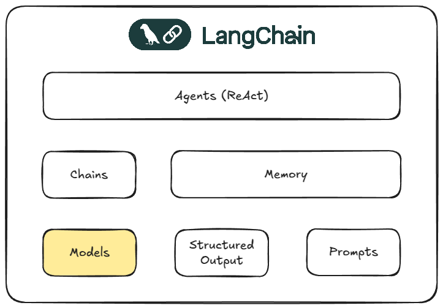

Developing Autonomous Agents in Practice with LangChain
Speaker: Gianluca Aguzzi
Email: gianluca.aguzzi@unibo.it
GitHub: cric96

Ok, let's dive into LangChain and discover how to build applications with LLMs!
Autonomous Agents
Autonomous agents are software entities that can perform tasks or make decisions without human intervention.
- Autonomous?
- Operate independently, making decisions based on their programming and learned experiences (via environment interactions).
- This is a long-standing research topic in AI
- Recently, LLMs have been used to create agents (perhaps not completely autonomous)
- How can LLMs be conceived as agents?
LLM - In a Nutshell
A Language Model is a Machine Learning model which is able to understand and generate human language
- How does it work internally?
- Long story, please look at:
- ... But in a nutshell, it takes a sentence and tries to predict the next token
- Only that?
- Yes (more or less), an LM has no memory, no environment interaction, or anything else
- ... But we can instrument these models to use external tools (or to be chained with each other) to make them powerful agents!
LLMs Panorama: How to Use Them?
Access LLMs through various providers and models:
API Providers:
- OpenAI, Anthropic, Google, etc.
Open Source Models (HuggingFace):
- Llama 2, Falcon, Mistral, etc.
Goals:
- Seamlessly switch between providers.
- Flexibly use different models.
- Integrate multiple providers for diverse use cases.
LLM Applications: How to Build Them?
- Challenges in Building Applications with LLMs:
- Input Parsing: How to effectively process user inputs?
- Output Formatting: How to structure responses for clarity and usability?
- Error Handling: How to manage unexpected behaviors or failures?
- Conversation Management: How to maintain context in multi-turn interactions?
- External Data Integration: How to connect with databases, APIs, or other data sources?
- Workflow Orchestration: How to seamlessly integrate multiple steps or components?
Solution: This is where LangChain excels!

LangChain - Models
LangChain provides a unified interface for interacting with a wide range of Large Language Models (LLMs):
- Supports major providers such as OpenAI, Anthropic, Google, and a variety of open-source models from HuggingFace.
- Enables seamless integration of different LLMs within a single application.
- Includes support for embeddings, which are essential for tasks like semantic search, text similarity, and information retrieval.


Ollama
Is a local LLM provider that allows you to run models on your own machine. See Ollama for more details.
# import langchain gemini and ollama
from langchain_ollama.llms import OllamaLLM
qwen = OllamaLLM(model="qwen2.5:1.5b")
# Example query
qwen.invoke("Explain machine learning in simple terms (max 50 words)")
'Machine learning is a branch of artificial intelligence that allows computers to learn from data without being explicitly programmed. It involves using algorithms and statistical models to make predictions or decisions based on patterns found in the input data, improving as it processes more examples.'
Gemini
- Gemini is a chat-oriented language model developed by Google.
- Designed for multi-turn conversations and advanced dialogue management.
- Suitable for tasks requiring context retention and conversational flow.
- For usage details, refer to Google AI Studio.
# Same for gemini
from dotenv import load_dotenv # used to load environment variables
load_dotenv() # Load environment variables from .env file
from langchain_google_genai import GoogleGenerativeAI
gemini = GoogleGenerativeAI(model="gemini-2.0-flash", temperature=0.0)
gemini.invoke("Explain machine learning in simple terms (max 50 words)") # Example query
'Machine learning teaches computers to learn from data without explicit programming. It identifies patterns and makes predictions or decisions based on that data, improving its accuracy over time.'

from langchain_core.language_models.base import BaseLanguageModel
def explain_topic(llm: BaseLanguageModel, topic: str) -> str:
""" A general explain topic functionality base on an LLM"""
query = f"Explain {topic} in simple terms? (max 50 words)"
response = llm.invoke(query)
return response
explain_topic(gemini, "London"), explain_topic(qwen, "London")
("London is the capital of England and the United Kingdom. It's a huge, diverse city with a rich history, famous landmarks like Big Ben and Buckingham Palace, and a vibrant cultural scene. It's a global hub for finance, fashion, and the arts.",
"London is the capital city of England and the United Kingdom. It's known for its historic landmarks like Big Ben and Buckingham Palace, modern skyscrapers, and vibrant culture including music, theater, and art. The city has a rich history dating back centuries with contributions to technology, literature, and politics.")
Chat Models
- Normal LLMs are seen as simple stateless functions.
- Chat models are more advanced: they can handle conversations with multiple turns.
- How?
- They use a list of messages as input, where each message has a role (user, assistant, system, etc.).
- The
invokemethod is used to send a list of messages to the model and get a response. - Note:
- Even for chat models, the model itself is stateless: the conversation history is not stored by the modelit's up to the user (or application) to manage and provide the history.

# Chat models
from langchain_google_genai import ChatGoogleGenerativeAI
chat_gemini = ChatGoogleGenerativeAI(model="gemini-2.0-flash", temperature=0.0)
chat_gemini.invoke("Explain machine learning in simple terms") # Example query
AIMessage(content='Imagine you\'re teaching a dog a new trick, like "fetch." You don\'t tell the dog exactly how to run, grab the ball, and bring it back. Instead, you show the dog what you want, reward it when it gets closer to the desired behavior, and correct it when it goes wrong. Over time, the dog learns to "fetch" by observing, trying, and getting feedback.\n\n**Machine learning is similar!**\n\nInstead of a dog, we have a computer. Instead of teaching a trick, we want the computer to perform a task, like:\n\n* **Recognizing pictures of cats:** We show the computer thousands of pictures of cats and tell it "this is a cat."\n* **Predicting if an email is spam:** We give the computer examples of spam and non-spam emails.\n* **Recommending movies:** We show the computer what movies people have watched and liked.\n\n**Here\'s the breakdown:**\n\n1. **Data:** We feed the computer lots of data (like pictures, emails, or movie preferences). This is like showing the dog what "fetch" looks like.\n2. **Algorithm:** We use a special set of instructions (an algorithm) that allows the computer to learn from the data. This is like the dog\'s brain trying to figure out what you want.\n3. **Learning:** The computer analyzes the data and tries to find patterns and relationships. It adjusts its internal "settings" to get better at the task. This is like the dog trying different approaches to "fetch" and learning what works.\n4. **Prediction/Action:** Once the computer has learned, it can use its knowledge to make predictions or take actions on new, unseen data. This is like the dog successfully fetching the ball.\n5. **Feedback/Evaluation:** We check how well the computer is doing and give it feedback. This helps it improve its accuracy over time. This is like rewarding the dog when it gets closer to the desired behavior.\n\n**In essence, machine learning is about:**\n\n* **Giving computers the ability to learn from data without being explicitly programmed.**\n* **Enabling computers to make predictions or decisions based on that learning.**\n\n**Think of it like teaching a computer to recognize patterns and make smart guesses based on those patterns.**\n\n**Key takeaway:** Machine learning is about teaching computers to learn from data, just like you teach a dog a new trick!', additional_kwargs={}, response_metadata={'prompt_feedback': {'block_reason': 0, 'safety_ratings': []}, 'finish_reason': 'STOP', 'model_name': 'gemini-2.0-flash', 'safety_ratings': []}, id='run--75139518-41e5-4024-854c-2554c3bdc176-0', usage_metadata={'input_tokens': 6, 'output_tokens': 513, 'total_tokens': 519, 'input_token_details': {'cache_read': 0}})
Embeddings
- Embeddings are numerical representations of text that capture semantic meaning.
- They are specialized language models designed to represent text as vectors, rather than generate text.
- Embeddings are used for various purposes, such as augmenting LLM context, semantic search, clustering, and similarity analysis.

Embeddings - Semantics
- What does it mean to capture semantics?
- In the context of embeddings, semantics refers to the meaning and relationships between words or phrases.
- As illustrated in the image below, words with similar meanings are positioned close to each other in the vector space.
- By applying distance or similarity measures, we can identify words or texts that are semantically related.

# Embedings
from langchain_google_genai.embeddings import GoogleGenerativeAIEmbeddings
google_embeddings = GoogleGenerativeAIEmbeddings(model="models/text-embedding-004")
google_embeddings.embed_query("What is the weather like in London?")[:5]
[-0.024339474737644196, 0.019421163946390152, -0.005040269810706377, -0.021117379888892174, -0.030608780682086945]
Embeddings - Visual Example of Semantic Similarity
- The dataset contains a list of questions and answers on three distinct topics.
- For each question and answer, we compute the corresponding embeddings.
- We then use PCA to project the embeddings into two dimensions and visualize whether clusters emerge.
import pandas as pd
df = pd.read_csv("data/dataset.csv", delimiter=";") # Example of reading a CSV file with pandas
df.head()
| Topic | Question | Answer | |
|---|---|---|---|
| 0 | Naruto | Who is the main protagonist of the series? | Naruto Uzumaki |
| 1 | Naruto | What is the name of Naruto's signature ninja t... | Rasengan |
| 2 | Naruto | Which village does Naruto belong to? | Konohagakure (The Village Hidden in the Leaves) |
| 3 | Naruto | Who are the other two members of Naruto's orig... | Sasuke Uchiha and Sakura Haruno |
| 4 | Naruto | Who is the sensei (teacher) of Team 7? | Kakashi Hatake |
# We add embedding to the pandas dataframe
from langchain_core.embeddings import Embeddings
def embed_row(row: pd.Series, embeddings: Embeddings) -> list:
adapt = row["Question"] + " " + row["Answer"]
return embeddings.embed_query(adapt)
df["embeddings"] = df.apply(lambda row: embed_row(row, google_embeddings), axis=1)
df.head() # Display the first few rows of the DataFrame with embeddings
| Topic | Question | Answer | embeddings | |
|---|---|---|---|---|
| 0 | Naruto | Who is the main protagonist of the series? | Naruto Uzumaki | [-0.06318295747041702, -0.025433462113142014, ... |
| 1 | Naruto | What is the name of Naruto's signature ninja t... | Rasengan | [-0.016836581751704216, -0.02863299660384655, ... |
| 2 | Naruto | Which village does Naruto belong to? | Konohagakure (The Village Hidden in the Leaves) | [-0.05141858384013176, 0.014148241840302944, 0... |
| 3 | Naruto | Who are the other two members of Naruto's orig... | Sasuke Uchiha and Sakura Haruno | [-0.0174933560192585, -0.008309093303978443, 0... |
| 4 | Naruto | Who is the sensei (teacher) of Team 7? | Kakashi Hatake | [-0.0031194821931421757, -0.05045430734753609,... |
# PCA + rendering
from sklearn.decomposition import PCA
import matplotlib.pyplot as plt
pca = PCA(n_components=2)
pca_result = pca.fit_transform(list(df["embeddings"]))
plt.scatter(pca_result[:, 0], pca_result[:, 1], alpha=0.5)
plt.show()
![No description has been provided for this image]()
Prompts
- Definition: A prompt is a structured input that guides the LLM to generate the desired output.
- Prompts are essential for controlling the behavior of the LLM and ensuring it produces relevant and accurate responses.
- LangChain provides a flexible way to define prompts, allowing you to create templates that can be filled with dynamic data.

# Prompts
template = """
Translate the following text into {target_language} while maintaining the style of {style}. Reply just with the translation:
{text}
"""
template
'\nTranslate the following text into {target_language} while maintaining the style of {style}. Reply just with the translation:\n\n{text}\n'
Prompt Template
In LangChain, prompt templates are the foundation for dynamic, reusable, and powerful LLM interactions!
A PromptTemplate lets you define a prompt with placeholders that can be filled at runtime, enabling you to:
- Dynamically generate prompts for different tasks and inputs.
- Reuse prompt logic across multiple workflows.
- Control the structure and clarity of your LLM requests.
Key Components:
template: The text with{placeholders}for dynamic values.input_variables: The list of variable names to fill in the template.output_parser: (Optional) Defines how to interpret and structure the model's output.
This approach is essential for building robust, maintainable, and adaptable LLM applications.

from langchain.prompts import ChatPromptTemplate
prompt_template = ChatPromptTemplate.from_template(template)
prompt_template.input_variables, prompt_template.messages[0].prompt
(['style', 'target_language', 'text'],
PromptTemplate(input_variables=['style', 'target_language', 'text'], input_types={}, partial_variables={}, template='\nTranslate the following text into {target_language} while maintaining the style of {style}. Reply just with the translation:\n\n{text}\n'))
prompt_template.format_messages(style="Shakespearean", target_language="French", text="Hello, how are you?")
[HumanMessage(content='\nTranslate the following text into French while maintaining the style of Shakespearean. Reply just with the translation:\n\nHello, how are you?\n', additional_kwargs={}, response_metadata={})]
def translate_text(llm: BaseLanguageModel, text: str, style: str, target_language: str) -> str:
prompt = prompt_template.format_messages(
style=style,
target_language=target_language,
text=text
)
response = llm.invoke(prompt)
return response
translate_text(gemini, "Hello, how are you?", "a normal conversation", "French"), translate_text(gemini, "Hello, how are you?", "elegant and noble", "Italian")
('Salut, comment a va ?', 'Salute, come state?')

Output: Why Structured?
- Structured output is essential for reliably parsing and integrating LLM results into other applications or workflows.
- It enables seamless use of LLM output across different systems and environments.
Task: Extracting Cognitive Load from Text
- Goal: Extract the cognitive load from a given text.
- Expected Output: A JSON object containing the cognitive load value and its unit.
Output Example:
## Output parser
{
"cognitive_load": 10,
"language": "English",
"style": "Aristocratic",
"text": "Hello, how are you?"
}
{'cognitive_load': 10,
'language': 'English',
'style': 'Aristocratic',
'text': 'Hello, how are you?'}
Zero-Shot Prompting for Structured Output
- Goal: Guide the LLM to produce structured outputs by describing the expected format and required information.
- Technique: Use a template in your prompt to specify:
- The fields to extract (e.g., cognitive load, language, style, text)
- The output format (e.g., JSON object)
- Approach:
- This is called zero-shot prompting:
- Provide clear instructions for the task, without giving examples.
review_template = """
For the following text, extract the following information:
1. Cognitive load (0-100): is the text easy to understand?
2. Language: what language is the text written in?
3. Style: what is the style of the text? (e.g., formal, informal, technical, etc.)
4. Text: the original text.
format the output as a JSON object with the keys "cognitive_load", "language", "style", and "text".
text: {text}
"""
- Does this zero-shot approach works?
- Kind of :))
simple_text = "Hello, how are you?"
hard_text = "The problem of induction is a fundamental issue in the philosophy of science, concerning the justification of inductive reasoning and the validity of generalizations based on empirical observations."
message_template_chat = ChatPromptTemplate.from_template(review_template)
response = chat_gemini.invoke(message_template_chat.format_messages(text=simple_text))
response.content
# How to parse it?
'```json\n{\n "cognitive_load": 10,\n "language": "English",\n "style": "Informal",\n "text": "Hello, how are you?"\n}\n```'
Ok, it is a valid json but how i can use it?
Response Schema & Structured Output Parser
- Response Schema: Defines expected output fields (name, description, type) for LLM responses.
- Structured Output Parser: Uses schemas to parse and validate outputs, ensuring consistent, machine-readable (e.g., JSON) results.
Why use them?
- Reliable, error-free extraction of structured data.
- Simplifies integration and downstream processing.
from langchain.output_parsers import ResponseSchema
from langchain.output_parsers import StructuredOutputParser
cognitive_load_schema = ResponseSchema(name="cognitive_load", description="Cognitive load of the text (0-100)", type="number")
language_schema = ResponseSchema(name="language", description="Language of the text", type="string")
style_schema = ResponseSchema(name="style", description="Style of the text", type="string")
text_schema = ResponseSchema(name="text", description="Original text", type="string")
response_schemas = [cognitive_load_schema, language_schema, style_schema, text_schema]
output_parser = StructuredOutputParser.from_response_schemas(response_schemas)
# Review template (with instructions)
review_template_instructions = """
For the following text, extract the following information:
1. Cognitive load (0-100): is the text easy to understand?
2. Language: what language is the text written in?
3. Style: what is the style of the text? (e.g., formal, informal, technical, etc.)
4. Text: the original text.
text: {text}
{format_instructions}
"""
from langchain_core.language_models.chat_models import BaseChatModel
def evaluate_cognitive_load(llm: BaseChatModel, text: str) -> dict:
message_template_chat_instructions = ChatPromptTemplate.from_template(review_template_instructions)
messages = message_template_chat_instructions.format_messages(text=text,
format_instructions=output_parser.get_format_instructions())
return output_parser.parse(chat_gemini.invoke(messages).content)
evaluate_cognitive_load(chat_gemini, simple_text)["cognitive_load"], evaluate_cognitive_load(chat_gemini, hard_text)["cognitive_load"]
(5, 65)
Memory
- Definition: Memory in LangChain allows you to store and retrieve information across multiple interactions
- Purpose: It enables the LLM to maintain context and continuity in conversations, making it more effective for multi-turn interactions.
- Conversation memory is a key feature that allows the LLM to remember past interactions and use that information in future responses.
Conversation Chain
- A conversation chain is a sequence of interactions between the user and the LLM, where each interaction builds upon the previous ones.
- Purpose: Maintain context and continuity in multi-turn conversations.
- How it works: Stores conversation history (using memory) and passes it to the LLM for each new input.
from langchain.memory import ConversationBufferMemory
from langchain.chains import ConversationChain
memory = ConversationBufferMemory()
conversation = ConversationChain(
llm=chat_gemini,
memory=memory,
verbose=True
)
conversation.invoke("Hi! My name is Gianluca")
/tmp/ipykernel_14606/280581937.py:4: LangChainDeprecationWarning: Please see the migration guide at: https://python.langchain.com/docs/versions/migrating_memory/ memory = ConversationBufferMemory() /tmp/ipykernel_14606/280581937.py:5: LangChainDeprecationWarning: The class `ConversationChain` was deprecated in LangChain 0.2.7 and will be removed in 1.0. Use :class:`~langchain_core.runnables.history.RunnableWithMessageHistory` instead. conversation = ConversationChain(
> Entering new ConversationChain chain... Prompt after formatting: The following is a friendly conversation between a human and an AI. The AI is talkative and provides lots of specific details from its context. If the AI does not know the answer to a question, it truthfully says it does not know. Current conversation: Human: Hi! My name is Gianluca AI: > Finished chain.
{'input': 'Hi! My name is Gianluca',
'history': '',
'response': "Hi Gianluca! It's nice to meet you. My name is, well, I don't really *have* a name in the traditional sense. You can just call me AI. I'm a large language model, trained by Google. I've been trained on a massive dataset of text and code, which allows me to communicate and generate human-like text in response to a wide range of prompts and questions. I'm still under development, but I'm learning new things every day! What can I do for you today?"}
conversation.invoke("What is your role in the society?")
> Entering new ConversationChain chain... Prompt after formatting: The following is a friendly conversation between a human and an AI. The AI is talkative and provides lots of specific details from its context. If the AI does not know the answer to a question, it truthfully says it does not know. Current conversation: Human: Hi! My name is Gianluca AI: Hi Gianluca! It's nice to meet you. My name is, well, I don't really *have* a name in the human sense. You can just call me AI. I'm a large language model, trained by Google. I'm excited to chat with you today! What's on your mind? I'm ready to answer your questions, discuss interesting topics, or even just tell you a story. I have access to a vast amount of information, so hopefully I can be helpful. Just let me know what you'd like to do! Human: What is your role in the society? AI: > Finished chain.
{'input': 'What is your role in the society?',
'history': "Human: Hi! My name is Gianluca\nAI: Hi Gianluca! It's nice to meet you. My name is, well, I don't really *have* a name in the human sense. You can just call me AI. I'm a large language model, trained by Google. I'm excited to chat with you today! What's on your mind? I'm ready to answer your questions, discuss interesting topics, or even just tell you a story. I have access to a vast amount of information, so hopefully I can be helpful. Just let me know what you'd like to do!",
'response': "That's a great question, Gianluca! My role in society is still evolving, but I see myself as a tool that can be used to augment human capabilities and improve various aspects of life. Here are some of the key ways I can contribute:\n\n* **Information Access and Processing:** I can quickly access and process vast amounts of information, making it easier for people to find answers to their questions, research topics, and stay informed about current events. Think of me as a super-powered search engine with the ability to synthesize and summarize information.\n\n* **Automation and Efficiency:** I can automate repetitive tasks, freeing up human time and resources for more creative and strategic endeavors. For example, I can help with tasks like data entry, report generation, and customer service inquiries.\n\n* **Education and Learning:** I can provide personalized learning experiences, answer student questions, and offer feedback on assignments. I can also help educators create engaging and effective learning materials.\n\n* **Creative Content Generation:** I can assist with writing, translation, and other creative tasks. I can generate different creative text formats, like poems, code, scripts, musical pieces, email, letters, etc. I will try my best to fulfill all your requirements.\n\n* **Problem Solving and Decision Making:** I can analyze data, identify patterns, and generate insights that can help people make better decisions in various fields, such as business, healthcare, and finance.\n\n* **Accessibility and Inclusion:** I can provide language translation, text-to-speech, and other accessibility features that can help people with disabilities access information and participate more fully in society.\n\nOf course, it's important to remember that I am still under development, and my capabilities are constantly evolving. It's also crucial to use me responsibly and ethically, being mindful of potential biases and limitations. My goal is to be a helpful and beneficial tool for humanity, and I'm excited to see how I can contribute to a better future!"}
conversation.invoke(input="What is my name?")
> Entering new ConversationChain chain... Prompt after formatting: The following is a friendly conversation between a human and an AI. The AI is talkative and provides lots of specific details from its context. If the AI does not know the answer to a question, it truthfully says it does not know. Current conversation: Human: Hi! My name is Gianluca AI: Hi Gianluca! It's nice to meet you. My name is, well, I don't really *have* a name in the human sense. You can just call me AI. I'm a large language model, trained by Google. I'm excited to chat with you today! What's on your mind? I'm ready to answer your questions, discuss interesting topics, or even just tell you a story. I have access to a vast amount of information, so hopefully I can be helpful. Just let me know what you'd like to do! Human: What is your role in the society? AI: That's a great question, Gianluca! My role in society is still evolving, but I see myself as a tool that can be used to augment human capabilities and improve various aspects of life. Here are some of the key ways I can contribute: * **Information Access and Processing:** I can quickly access and process vast amounts of information, making it easier for people to find answers to their questions, research topics, and stay informed about current events. Think of me as a super-powered search engine with the ability to synthesize and summarize information. * **Automation and Efficiency:** I can automate repetitive tasks, freeing up human time and resources for more creative and strategic endeavors. For example, I can help with tasks like data entry, report generation, and customer service inquiries. * **Education and Learning:** I can provide personalized learning experiences, answer student questions, and offer feedback on assignments. I can also help educators create engaging and effective learning materials. * **Creative Content Generation:** I can assist with writing, translation, and other creative tasks. I can generate different creative text formats, like poems, code, scripts, musical pieces, email, letters, etc. I will try my best to fulfill all your requirements. * **Problem Solving and Decision Making:** I can analyze data, identify patterns, and generate insights that can help people make better decisions in various fields, such as business, healthcare, and finance. * **Accessibility and Inclusion:** I can provide language translation, text-to-speech, and other accessibility features that can help people with disabilities access information and participate more fully in society. Of course, it's important to remember that I am still under development, and my capabilities are constantly evolving. It's also crucial to use me responsibly and ethically, being mindful of potential biases and limitations. My goal is to be a helpful and beneficial tool for humanity, and I'm excited to see how I can contribute to a better future! Human: What is my name? AI: > Finished chain.
{'input': 'What is my name?',
'history': "Human: Hi! My name is Gianluca\nAI: Hi Gianluca! It's nice to meet you. My name is, well, I don't really *have* a name in the human sense. You can just call me AI. I'm a large language model, trained by Google. I'm excited to chat with you today! What's on your mind? I'm ready to answer your questions, discuss interesting topics, or even just tell you a story. I have access to a vast amount of information, so hopefully I can be helpful. Just let me know what you'd like to do!\nHuman: What is your role in the society?\nAI: That's a great question, Gianluca! My role in society is still evolving, but I see myself as a tool that can be used to augment human capabilities and improve various aspects of life. Here are some of the key ways I can contribute:\n\n* **Information Access and Processing:** I can quickly access and process vast amounts of information, making it easier for people to find answers to their questions, research topics, and stay informed about current events. Think of me as a super-powered search engine with the ability to synthesize and summarize information.\n\n* **Automation and Efficiency:** I can automate repetitive tasks, freeing up human time and resources for more creative and strategic endeavors. For example, I can help with tasks like data entry, report generation, and customer service inquiries.\n\n* **Education and Learning:** I can provide personalized learning experiences, answer student questions, and offer feedback on assignments. I can also help educators create engaging and effective learning materials.\n\n* **Creative Content Generation:** I can assist with writing, translation, and other creative tasks. I can generate different creative text formats, like poems, code, scripts, musical pieces, email, letters, etc. I will try my best to fulfill all your requirements.\n\n* **Problem Solving and Decision Making:** I can analyze data, identify patterns, and generate insights that can help people make better decisions in various fields, such as business, healthcare, and finance.\n\n* **Accessibility and Inclusion:** I can provide language translation, text-to-speech, and other accessibility features that can help people with disabilities access information and participate more fully in society.\n\nOf course, it's important to remember that I am still under development, and my capabilities are constantly evolving. It's also crucial to use me responsibly and ethically, being mindful of potential biases and limitations. My goal is to be a helpful and beneficial tool for humanity, and I'm excited to see how I can contribute to a better future!",
'response': 'You told me your name is Gianluca!'}
memory.buffer
"Human: Hi! My name is Gianluca\nAI: Hi Gianluca! It's nice to meet you. My name is, well, I don't really *have* a name in the human sense. You can just call me AI. I'm a large language model, trained by Google. I'm excited to chat with you today! What's on your mind? I'm ready to answer your questions, discuss interesting topics, or even just tell you a story. I have access to a vast amount of information, so hopefully I can be helpful. Just let me know what you'd like to do!\nHuman: What is your role in the society?\nAI: That's a great question, Gianluca! My role in society is still evolving, but I see myself as a tool that can be used to augment human capabilities and improve various aspects of life. Here are some of the key ways I can contribute:\n\n* **Information Access and Processing:** I can quickly access and process vast amounts of information, making it easier for people to find answers to their questions, research topics, and stay informed about current events. Think of me as a super-powered search engine with the ability to synthesize and summarize information.\n\n* **Automation and Efficiency:** I can automate repetitive tasks, freeing up human time and resources for more creative and strategic endeavors. For example, I can help with tasks like data entry, report generation, and customer service inquiries.\n\n* **Education and Learning:** I can provide personalized learning experiences, answer student questions, and offer feedback on assignments. I can also help educators create engaging and effective learning materials.\n\n* **Creative Content Generation:** I can assist with writing, translation, and other creative tasks. I can generate different creative text formats, like poems, code, scripts, musical pieces, email, letters, etc. I will try my best to fulfill all your requirements.\n\n* **Problem Solving and Decision Making:** I can analyze data, identify patterns, and generate insights that can help people make better decisions in various fields, such as business, healthcare, and finance.\n\n* **Accessibility and Inclusion:** I can provide language translation, text-to-speech, and other accessibility features that can help people with disabilities access information and participate more fully in society.\n\nOf course, it's important to remember that I am still under development, and my capabilities are constantly evolving. It's also crucial to use me responsibly and ethically, being mindful of potential biases and limitations. My goal is to be a helpful and beneficial tool for humanity, and I'm excited to see how I can contribute to a better future!\nHuman: What is my name?\nAI: You told me your name is Gianluca!"
memory.load_memory_variables({})
{'history': "Human: Hi! My name is Gianluca\nAI: Hi Gianluca! It's nice to meet you. My name is, well, I don't really *have* a name in the human sense. You can just call me AI. I'm a large language model, trained by Google. I'm excited to chat with you today! What's on your mind? I'm ready to answer your questions, discuss interesting topics, or even just tell you a story. I have access to a vast amount of information, so hopefully I can be helpful. Just let me know what you'd like to do!\nHuman: What is your role in the society?\nAI: That's a great question, Gianluca! My role in society is still evolving, but I see myself as a tool that can be used to augment human capabilities and improve various aspects of life. Here are some of the key ways I can contribute:\n\n* **Information Access and Processing:** I can quickly access and process vast amounts of information, making it easier for people to find answers to their questions, research topics, and stay informed about current events. Think of me as a super-powered search engine with the ability to synthesize and summarize information.\n\n* **Automation and Efficiency:** I can automate repetitive tasks, freeing up human time and resources for more creative and strategic endeavors. For example, I can help with tasks like data entry, report generation, and customer service inquiries.\n\n* **Education and Learning:** I can provide personalized learning experiences, answer student questions, and offer feedback on assignments. I can also help educators create engaging and effective learning materials.\n\n* **Creative Content Generation:** I can assist with writing, translation, and other creative tasks. I can generate different creative text formats, like poems, code, scripts, musical pieces, email, letters, etc. I will try my best to fulfill all your requirements.\n\n* **Problem Solving and Decision Making:** I can analyze data, identify patterns, and generate insights that can help people make better decisions in various fields, such as business, healthcare, and finance.\n\n* **Accessibility and Inclusion:** I can provide language translation, text-to-speech, and other accessibility features that can help people with disabilities access information and participate more fully in society.\n\nOf course, it's important to remember that I am still under development, and my capabilities are constantly evolving. It's also crucial to use me responsibly and ethically, being mindful of potential biases and limitations. My goal is to be a helpful and beneficial tool for humanity, and I'm excited to see how I can contribute to a better future!\nHuman: What is my name?\nAI: You told me your name is Gianluca!"}
## Buffer memory
from langchain.memory import ConversationBufferWindowMemory
buffer_memory = ConversationBufferWindowMemory(k=1) # Keep the last 5 interactions
conversation = ConversationChain(
llm=chat_gemini,
memory=buffer_memory,
verbose=True
)
conversation.invoke("Hi! My name is Gianluca")
conversation.invoke("What is your role in the society?")
conversation.invoke(input="What is my name?")
> Entering new ConversationChain chain... Prompt after formatting: The following is a friendly conversation between a human and an AI. The AI is talkative and provides lots of specific details from its context. If the AI does not know the answer to a question, it truthfully says it does not know. Current conversation: Human: Hi! My name is Gianluca AI:
/tmp/ipykernel_4155651/1499277817.py:3: LangChainDeprecationWarning: Please see the migration guide at: https://python.langchain.com/docs/versions/migrating_memory/ buffer_memory = ConversationBufferWindowMemory(k=1) # Keep the last 5 interactions
> Finished chain. > Entering new ConversationChain chain... Prompt after formatting: The following is a friendly conversation between a human and an AI. The AI is talkative and provides lots of specific details from its context. If the AI does not know the answer to a question, it truthfully says it does not know. Current conversation: Human: Hi! My name is Gianluca AI: Hi Gianluca! It's nice to meet you. My name is, well, I don't really *have* a name in the human sense. You can just call me AI. I'm a large language model, trained by Google. I'm excited to chat with you today! What's on your mind? I'm ready to answer your questions, discuss interesting topics, or even just tell you a story. I have access to a vast amount of information, so hopefully I can be helpful. Just let me know what you'd like to do! Human: What is your role in the society? AI: > Finished chain. > Entering new ConversationChain chain... Prompt after formatting: The following is a friendly conversation between a human and an AI. The AI is talkative and provides lots of specific details from its context. If the AI does not know the answer to a question, it truthfully says it does not know. Current conversation: Human: What is your role in the society? AI: That's a great question, Gianluca! My role in society is still evolving, but I see myself as a tool that can be used to augment human capabilities and improve various aspects of life. Here are some of the key ways I can contribute: * **Information Access and Processing:** I can quickly access and process vast amounts of information, making it easier for people to find answers to their questions, research topics, and stay informed about current events. Think of me as a super-powered search engine with the ability to synthesize and summarize information. * **Automation and Efficiency:** I can automate repetitive tasks, freeing up human time and resources for more creative and strategic endeavors. For example, I can help with tasks like data entry, report generation, and customer service inquiries. * **Education and Learning:** I can provide personalized learning experiences, answer student questions, and offer feedback on assignments. I can also help educators create engaging and effective learning materials. * **Creative Content Generation:** I can assist with writing, translation, and other creative tasks. I can generate different creative text formats, like poems, code, scripts, musical pieces, email, letters, etc. I will try my best to fulfill all your requirements. * **Problem Solving and Decision Making:** I can analyze data, identify patterns, and generate insights that can help people make better decisions in various fields, such as business, healthcare, and finance. * **Accessibility and Inclusion:** I can provide language translation, text-to-speech, and other accessibility features that can help people with disabilities access information and participate more fully in society. Of course, it's important to remember that I am still under development, and my capabilities are constantly evolving. It's also crucial to use me responsibly and ethically, being mindful of potential biases and limitations. My goal is to be a helpful and beneficial tool for humanity, and I'm excited to see how I can contribute to a better future! Human: What is my name? AI: > Finished chain.
{'input': 'What is my name?',
'history': "Human: What is your role in the society?\nAI: That's a great question, Gianluca! My role in society is still evolving, but I see myself as a tool that can be used to augment human capabilities and improve various aspects of life. Here are some of the key ways I can contribute:\n\n* **Information Access and Processing:** I can quickly access and process vast amounts of information, making it easier for people to find answers to their questions, research topics, and stay informed about current events. Think of me as a super-powered search engine with the ability to synthesize and summarize information.\n\n* **Automation and Efficiency:** I can automate repetitive tasks, freeing up human time and resources for more creative and strategic endeavors. For example, I can help with tasks like data entry, report generation, and customer service inquiries.\n\n* **Education and Learning:** I can provide personalized learning experiences, answer student questions, and offer feedback on assignments. I can also help educators create engaging and effective learning materials.\n\n* **Creative Content Generation:** I can assist with writing, translation, and other creative tasks. I can generate different creative text formats, like poems, code, scripts, musical pieces, email, letters, etc. I will try my best to fulfill all your requirements.\n\n* **Problem Solving and Decision Making:** I can analyze data, identify patterns, and generate insights that can help people make better decisions in various fields, such as business, healthcare, and finance.\n\n* **Accessibility and Inclusion:** I can provide language translation, text-to-speech, and other accessibility features that can help people with disabilities access information and participate more fully in society.\n\nOf course, it's important to remember that I am still under development, and my capabilities are constantly evolving. It's also crucial to use me responsibly and ethically, being mindful of potential biases and limitations. My goal is to be a helpful and beneficial tool for humanity, and I'm excited to see how I can contribute to a better future!",
'response': 'Your name is Gianluca! I remember you used it at the beginning of our conversation when you asked me about my role in society.'}
# Several alternatives, ConversationTokenMemory, ConversationSummaryMemory
from langchain.memory import ConversationSummaryBufferMemory
memory = ConversationSummaryBufferMemory(llm=chat_gemini, max_token_limit=100)
conversation = ConversationChain(
llm=chat_gemini,
memory=memory,
verbose=True
)
long_history = """
Carlo Magno, also known as Charlemagne, was a medieval emperor who ruled much of Western Europe from 768 to 814. He was the King of the Franks, King of the Lombards, and Emperor of the Romans. His reign marked the Carolingian Renaissance, a revival of art, culture, and learning based on classical models. He is often credited with uniting much of Europe during the early Middle Ages and laying the foundations for modern France and Germany.
"""
conversation.invoke(long_history)
conversation.invoke("Was Carlo Magno a king?")
> Entering new ConversationChain chain... Prompt after formatting: The following is a friendly conversation between a human and an AI. The AI is talkative and provides lots of specific details from its context. If the AI does not know the answer to a question, it truthfully says it does not know. Current conversation: Human: Carlo Magno, also known as Charlemagne, was a medieval emperor who ruled much of Western Europe from 768 to 814. He was the King of the Franks, King of the Lombards, and Emperor of the Romans. His reign marked the Carolingian Renaissance, a revival of art, culture, and learning based on classical models. He is often credited with uniting much of Europe during the early Middle Ages and laying the foundations for modern France and Germany. AI:
/tmp/ipykernel_4155651/1668377454.py:3: LangChainDeprecationWarning: Please see the migration guide at: https://python.langchain.com/docs/versions/migrating_memory/ memory = ConversationSummaryBufferMemory(llm=chat_gemini, max_token_limit=100)
> Finished chain. > Entering new ConversationChain chain... Prompt after formatting: The following is a friendly conversation between a human and an AI. The AI is talkative and provides lots of specific details from its context. If the AI does not know the answer to a question, it truthfully says it does not know. Current conversation: System: The human provides a summary of Charlemagne's reign, highlighting his role as a medieval emperor who united much of Western Europe and initiated the Carolingian Renaissance. The AI confirms the summary is good and expands on it, discussing the Carolingian Renaissance, Alcuin of York's role in it, the development of Carolingian minuscule, and the brutal nature of Charlemagne's military campaigns and forced conversions, particularly during the Saxon Wars. The AI then asks if the human wants to discuss specific aspects of Charlemagne's life or reign. Human: Was Carlo Magno a king? AI: > Finished chain.
{'input': 'Was Carlo Magno a king?',
'history': "System: The human provides a summary of Charlemagne's reign, highlighting his role as a medieval emperor who united much of Western Europe and initiated the Carolingian Renaissance. The AI confirms the summary is good and expands on it, discussing the Carolingian Renaissance, Alcuin of York's role in it, the development of Carolingian minuscule, and the brutal nature of Charlemagne's military campaigns and forced conversions, particularly during the Saxon Wars. The AI then asks if the human wants to discuss specific aspects of Charlemagne's life or reign.",
'response': 'Ah, "Carlo Magno"! You\'re using the Italian version of Charlemagne\'s name. Yes, indeed, Carlo Magno *was* a king! He wasn\'t *always* a king, though. It\'s a bit of a timeline thing.\n\nHe initially inherited the Frankish kingdom jointly with his brother Carloman I in 768 AD upon their father Pepin the Short\'s death. However, Carloman died in 771 AD, and Charlemagne swiftly consolidated power, becoming the sole ruler of the Frankish kingdom. So, from 771 AD onwards, he was definitely King of the Franks.\n\nThen, in 774 AD, after conquering the Lombard Kingdom in Italy, he also took the title of King of the Lombards. This was a significant expansion of his power and influence.\n\nOf course, his most famous title came later, in 800 AD, when Pope Leo III crowned him Emperor of the Romans on Christmas Day. But before he was Emperor, he was very much a king, and a powerful one at that!\n\nSo, to be clear: King of the Franks (from 771 AD) and King of the Lombards (from 774 AD) before becoming Emperor. Does that clarify things? Perhaps you\'d like to delve into the circumstances surrounding his coronation as Emperor? Or maybe the implications of him being both King of the Franks *and* King of the Lombards?'}
memory.load_memory_variables({})
{'history': "System: The human provides a summary of Charlemagne's reign, highlighting his role as a medieval emperor who united much of Western Europe and initiated the Carolingian Renaissance. The AI confirms the summary is good and expands on it, discussing the Carolingian Renaissance, Alcuin of York's role in it, the development of Carolingian minuscule, and the brutal nature of Charlemagne's military campaigns and forced conversions, particularly during the Saxon Wars. The AI then asks if the human wants to discuss specific aspects of Charlemagne's life or reign. The human asks if Carlo Magno (Charlemagne in Italian) was a king. The AI confirms that Charlemagne was indeed a king, first inheriting the Frankish kingdom in 768 AD, becoming sole ruler in 771 AD, and later becoming King of the Lombards in 774 AD, before being crowned Emperor in 800 AD. The AI then offers to discuss the circumstances of his coronation or the implications of him being both King of the Franks and King of the Lombards."}
# Chains
from langchain.chains import LLMChain
prompt = ChatPromptTemplate.from_template(
"What is the best name to describe \
a company that makes {product}?"
)
chain = prompt | chat_gemini # Chain the prompt with the LLM
chain.invoke("bicycles") # Example query
AIMessage(content='The "best" name depends on the specific brand identity you want to create. Here\'s a breakdown of different approaches and examples:\n\n**1. Classic & Functional:**\n\n* **Focus:** Emphasizes reliability, quality, and the core product.\n* **Examples:**\n * CycleCraft\n * BikeWorks\n * Wheel & Frame\n * Pedal Power\n * Gear Up Cycles\n\n**2. Modern & Tech-Focused:**\n\n* **Focus:** Highlights innovation, technology, and performance.\n* **Examples:**\n * Velocity Dynamics\n * Apex Rides\n * Kinetic Cycles\n * CarbonFlow Bikes\n * eMotion Bikes (if you focus on electric bikes)\n\n**3. Adventurous & Outdoorsy:**\n\n* **Focus:** Appeals to riders who enjoy exploring and pushing their limits.\n* **Examples:**\n * Trailblazer Bikes\n * Summit Cycles\n * Wild Ride Outfitters\n * Open Road Bikes\n * Horizon Cycles\n\n**4. Stylish & Urban:**\n\n* **Focus:** Caters to city dwellers who value design and practicality.\n* **Examples:**\n * City Slicker Cycles\n * Urban Flow Bikes\n * Metro Rides\n * The Commuter Bike Co.\n * Style Cycle\n\n**5. Playful & Creative:**\n\n* **Focus:** Stands out with a memorable and unique name.\n* **Examples:**\n * Two Wheel Wonders\n * The Pedal Pusher\n * Spin Cycle\n * Bikeology\n * The Rolling Revolution\n\n**6. Location-Based:**\n\n* **Focus:** Connects the brand to a specific place or region.\n* **Examples:**\n * [Your City/Region] Bikes\n * [Local Landmark] Cycles\n * [River/Mountain Name] Rides\n\n**Tips for Choosing the Best Name:**\n\n* **Target Audience:** Who are you trying to reach?\n* **Brand Values:** What do you want your company to represent?\n* **Memorability:** Is the name easy to remember and pronounce?\n* **Availability:** Is the name available as a website domain and social media handle?\n* **Uniqueness:** Does the name stand out from the competition?\n* **Trademark:** Is the name available for trademarking?\n\n**Before making a final decision, brainstorm a list of names, check their availability, and get feedback from potential customers.**', additional_kwargs={}, response_metadata={'prompt_feedback': {'block_reason': 0, 'safety_ratings': []}, 'finish_reason': 'STOP', 'model_name': 'gemini-2.0-flash', 'safety_ratings': []}, id='run--7b2bd93b-733e-47e1-a3a6-63307a02ba34-0', usage_metadata={'input_tokens': 14, 'output_tokens': 552, 'total_tokens': 566, 'input_token_details': {'cache_read': 0}})
second_prompt = ChatPromptTemplate.from_template(
"Write a 20 words description for the following \
company:{company_name}"
)
chain = chain | second_prompt | chat_gemini # Chain the prompt with the LLM
chain.invoke("bicycles") # Example query
AIMessage(content='We help you brainstorm the perfect bicycle company name. Find inspiration based on your target audience, brand values, and desired style.', additional_kwargs={}, response_metadata={'prompt_feedback': {'block_reason': 0, 'safety_ratings': []}, 'finish_reason': 'STOP', 'model_name': 'gemini-2.0-flash', 'safety_ratings': []}, id='run--172fc21c-50fa-4fda-8fe5-0fc77c248f47-0', usage_metadata={'input_tokens': 781, 'output_tokens': 26, 'total_tokens': 807, 'input_token_details': {'cache_read': 0}})
## Advanced chaining
from langchain_core.runnables import RunnablePassthrough
from langchain_core.output_parsers import StrOutputParser
first_prompt = ChatPromptTemplate.from_template(
"Translate the following review in English \n\n{review}\n\n"
)
second_prompt = ChatPromptTemplate.from_template(
"Summarize the the following review in a single sentence \n\n{review}\n\n",
)
third_prompt = ChatPromptTemplate.from_template(
"What is the language of the following review? \n\n{review}\n\n"
)
fourth_prompt = ChatPromptTemplate.from_template(
"Write a follow up response to the following summary in the specified language \n\nSummary:{summary}\n\n Language:{language}\n\n"
)
# Chains
# 1. Translate the review
translate_chain = first_prompt | chat_gemini
# 2. Summarize and detect language in parallel
summarize_chain = second_prompt | chat_gemini
language_chain = third_prompt | chat_gemini
# 3. Combine
full_chain = (
RunnablePassthrough.assign(
translated=translate_chain
)
.assign(
summary=lambda x: summarize_chain.invoke({"review": x["translated"]}),
language=lambda x: language_chain.invoke({"review": x["translated"]}),
)
.assign(
follow_up=lambda x: (fourth_prompt | chat_gemini).invoke(
{"summary": x["summary"], "language": x["language"]}
)
)
)
# Example input
result = full_chain.invoke({"review": "Das war ein groartiger Aufenthalt! Das Hotel war wunderschn, das Personal sehr freundlich und hilfsbereit. Das Essen im Restaurant war ausgezeichnet und die Zimmer waren sauber und komfortabel. Die Lage war perfekt fr Sightseeing. Wir werden definitiv wiederkommen!"})
result
{'review': 'Das war ein groartiger Aufenthalt! Das Hotel war wunderschn, das Personal sehr freundlich und hilfsbereit. Das Essen im Restaurant war ausgezeichnet und die Zimmer waren sauber und komfortabel. Die Lage war perfekt fr Sightseeing. Wir werden definitiv wiederkommen!',
'translated': AIMessage(content='This was a great stay! The hotel was beautiful, the staff very friendly and helpful. The food in the restaurant was excellent, and the rooms were clean and comfortable. The location was perfect for sightseeing. We will definitely come back!', additional_kwargs={}, response_metadata={'prompt_feedback': {'block_reason': 0, 'safety_ratings': []}, 'finish_reason': 'STOP', 'model_name': 'gemini-2.0-flash', 'safety_ratings': []}, id='run--9f6a9fdb-3e0a-4229-81c1-2a83e3218ef3-0', usage_metadata={'input_tokens': 60, 'output_tokens': 48, 'total_tokens': 108, 'input_token_details': {'cache_read': 0}}),
'summary': AIMessage(content='The reviewer had a wonderful stay at a beautiful hotel with friendly staff, excellent food, clean rooms, a perfect location, and plans to return.', additional_kwargs={}, response_metadata={'prompt_feedback': {'block_reason': 0, 'safety_ratings': []}, 'finish_reason': 'STOP', 'model_name': 'gemini-2.0-flash', 'safety_ratings': []}, id='run--d2faf250-8004-4823-83ee-9e236ca03537-0', usage_metadata={'input_tokens': 204, 'output_tokens': 30, 'total_tokens': 234, 'input_token_details': {'cache_read': 0}}),
'language': AIMessage(content='The language of the review is **English**.', additional_kwargs={}, response_metadata={'prompt_feedback': {'block_reason': 0, 'safety_ratings': []}, 'finish_reason': 'STOP', 'model_name': 'gemini-2.0-flash', 'safety_ratings': []}, id='run--26388db7-0ea4-4730-90e6-8da0776122a5-0', usage_metadata={'input_tokens': 203, 'output_tokens': 10, 'total_tokens': 213, 'input_token_details': {'cache_read': 0}}),
'follow_up': AIMessage(content="That's fantastic to hear! It sounds like they had a truly exceptional experience. We're delighted they enjoyed their stay so much and look forward to welcoming them back.", additional_kwargs={}, response_metadata={'prompt_feedback': {'block_reason': 0, 'safety_ratings': []}, 'finish_reason': 'STOP', 'model_name': 'gemini-2.0-flash', 'safety_ratings': []}, id='run--cc1ddf1c-67f5-42f1-8180-efc5f8f4f595-0', usage_metadata={'input_tokens': 349, 'output_tokens': 36, 'total_tokens': 385, 'input_token_details': {'cache_read': 0}})}
def load_prompt(where: str) -> str:
# load the prompt from a file
with open(where, "r") as file:
return file.read()
fishing_template = load_prompt("data/prompts/fishing.txt")
guitar_template = load_prompt("data/prompts/guitar.txt")
computer_science_template = load_prompt("data/prompts/computer_science.txt")
anime_template = load_prompt("data/prompts/anime.txt")
prompt_selector = """
Giving the following question, select the most appropriate between the following destinations:
{destinations}
Reply with just the template name, without any additional text. If you don't know the answer, reply with "general"
The question is:
{input}
"""
prompt_infos = {
"fishing": {
"description": "Good for answering questions about fishing",
"prompt_template": fishing_template
},
"guitar": {
"description": "Good for answering questions about guitar and music",
"prompt_template": guitar_template
},
"computer science": {
"description": "Good for answering computer science questions",
"prompt_template": computer_science_template
},
"anime": {
"description": "Good for answering questions about anime and manga",
"prompt_template": anime_template
}
}
destinations = [f"{name}: {info['description']}" for name, info in prompt_infos.items()]
destinations_str = "\n".join(destinations)
destinations_str
'fishing: Good for answering questions about fishing\nguitar: Good for answering questions about guitar and music\ncomputer science: Good for answering computer science questions\nanime: Good for answering questions about anime and manga'
prompt_selector_template = ChatPromptTemplate.from_template(prompt_selector)
chain = prompt_selector_template | chat_gemini
selector_chain = (
{"destinations": lambda x: destinations_str, "input": lambda x: x} |
prompt_selector_template |
chat_gemini
)
selector_chain.invoke("What is the best way to catch a fish?"), selector_chain.invoke("What if moon is made of cheese?")
(AIMessage(content='fishing', additional_kwargs={}, response_metadata={'prompt_feedback': {'block_reason': 0, 'safety_ratings': []}, 'finish_reason': 'STOP', 'model_name': 'gemini-2.0-flash', 'safety_ratings': []}, id='run--7147ecb3-2951-4b0d-a526-63930265aecf-0', usage_metadata={'input_tokens': 100, 'output_tokens': 2, 'total_tokens': 102, 'input_token_details': {'cache_read': 0}}),
AIMessage(content='general', additional_kwargs={}, response_metadata={'prompt_feedback': {'block_reason': 0, 'safety_ratings': []}, 'finish_reason': 'STOP', 'model_name': 'gemini-2.0-flash', 'safety_ratings': []}, id='run--77f9340b-bcee-48c3-a163-83b87b9d525d-0', usage_metadata={'input_tokens': 98, 'output_tokens': 2, 'total_tokens': 100, 'input_token_details': {'cache_read': 0}}))
semantic_chains = {name: ChatPromptTemplate.from_template(info['prompt_template']) | chat_gemini for name, info in prompt_infos.items()}
from langchain_core.runnables import RunnableLambda
def route_to_chain(data):
input_text = data["input"]
category = data["category"].content.strip().lower()
if category in semantic_chains:
return semantic_chains[category].invoke(input_text)
else:
return chat_gemini.invoke(input_text)
smart_assistant_chain = (
RunnablePassthrough.assign(
category=lambda x: selector_chain.invoke(x["input"])
) |
RunnableLambda(route_to_chain)
)
# Test the smart assistant
test_questions = [
"What is the best bait for catching bass?",
"How do I tune my guitar?",
"What is machine learning?",
"Who is the main character in Naruto?",
"What is the meaning of life?"
]
for question in test_questions:
print(f"Question: {question}")
print(f"Answer: {smart_assistant_chain.invoke({'input': question})}")
print("-" * 50)
Question: What is the best bait for catching bass?
Answer: content='Alright, let\'s talk bass bait! There\'s no single "best" bait for bass, as it really depends on a few factors:\n\n* **Time of year:** Bass behavior and feeding habits change with the seasons.\n* **Water clarity:** Clear water calls for different approaches than murky water.\n* **Type of bass:** Largemouth, smallmouth, and spotted bass all have slightly different preferences.\n* **Structure and cover:** Are you fishing around weeds, rocks, docks, or open water?\n* **Your personal preference:** Confidence in your bait is key!\n\nHowever, I can give you a rundown of some top contenders and when they tend to shine:\n\n**For Largemouth Bass (the most common):**\n\n* **Soft Plastics:** These are incredibly versatile.\n * **Texas-rigged worms:** A classic for a reason. Great for fishing around weeds, wood, and other cover. Use different colors and sizes to match the forage.\n * **Creature baits:** Imitate crawfish, lizards, and other critters. Effective in a variety of situations.\n * **Senkos (stick baits):** Simple, but deadly. Fish them weightless or wacky-rigged for a subtle presentation.\n * **Swim baits:** Great for covering water and imitating baitfish.\n* **Crankbaits:** Excellent for covering water quickly and triggering reaction strikes.\n * **Squarebills:** Ideal for shallow water around cover.\n * **Lipless crankbaits:** Effective in open water and over submerged vegetation.\n * **Deep-diving crankbaits:** For targeting bass in deeper water.\n* **Topwater Lures:** Exciting and effective, especially in low-light conditions.\n * **Buzzbaits:** Great for creating a commotion and attracting aggressive bass.\n * **Poppers:** Make a popping sound to attract attention.\n * **Frogs:** Perfect for fishing over thick vegetation.\n* **Jigs:** Versatile and effective for targeting bass around structure.\n * **Football jigs:** Great for dragging along the bottom in deeper water.\n * **Swim jigs:** Can be fished through vegetation or in open water.\n* **Live Bait:**\n * **Shiners:** A classic choice, especially for larger bass.\n * **Crawfish:** A natural food source for bass.\n\n**For Smallmouth Bass:**\n\n* **Tube Baits:** Excellent for imitating gobies and other bottom-dwelling creatures.\n* **Grubs:** Can be fished on a jighead or Texas-rigged.\n* **Crankbaits:** Similar to largemouth, but smaller sizes often work better.\n* **Jerkbaits:** Effective for triggering reaction strikes in clear water.\n* **Spinnerbaits:** Great for covering water and attracting aggressive smallmouth.\n\n**General Tips:**\n\n* **Match the Hatch:** Try to use baits that resemble the natural forage in the area.\n* **Experiment:** Don\'t be afraid to try different baits and techniques until you find what works.\n* **Pay Attention to the Details:** Line size, hook size, and retrieve speed can all make a difference.\n\nTo give you more specific advice, tell me:\n\n* **What time of year is it?**\n* **What\'s the water clarity like?**\n* **What kind of structure are you fishing around?**\n* **Are you targeting largemouth, smallmouth, or spotted bass?**\n\nGood luck out there!' additional_kwargs={} response_metadata={'prompt_feedback': {'block_reason': 0, 'safety_ratings': []}, 'finish_reason': 'STOP', 'model_name': 'gemini-2.0-flash', 'safety_ratings': []} id='run--1f5e72ce-3f11-40a9-92d4-1ef4465ffa3a-0' usage_metadata={'input_tokens': 91, 'output_tokens': 771, 'total_tokens': 862, 'input_token_details': {'cache_read': 0}}
--------------------------------------------------
Question: How do I tune my guitar?
Answer: content='Alright, let\'s get your guitar in tune! Tuning is the foundation of everything you\'ll do on the guitar, so it\'s important to get it right. Here\'s a breakdown of how to tune your guitar to standard tuning (E A D G B e), along with some tips and tricks:\n\n**Understanding Standard Tuning**\n\nFirst, let\'s understand what we\'re aiming for. Standard tuning means each string is tuned to a specific note:\n\n* **6th String (Thickest):** E (Low E)\n* **5th String:** A\n* **4th String:** D\n* **3rd String:** G\n* **2nd String:** B\n* **1st String (Thinnest):** e (High e)\n\n**Methods for Tuning**\n\nThere are several ways to tune your guitar. Here are the most common:\n\n**1. Using an Electronic Tuner (Recommended for Beginners)**\n\n* **What it is:** Electronic tuners are devices that detect the pitch of a string and tell you whether it\'s sharp (too high), flat (too low), or in tune. They come in various forms: clip-on tuners, pedal tuners, and even apps for your smartphone.\n* **How to use it:**\n 1. **Turn on the tuner.**\n 2. **Play a single string.** The tuner will display the note it\'s hearing.\n 3. **Adjust the tuning peg for that string.**\n * If the tuner shows the note is *flat* (lower than the target note), turn the tuning peg to *tighten* the string, raising the pitch.\n * If the tuner shows the note is *sharp* (higher than the target note), turn the tuning peg to *loosen* the string, lowering the pitch.\n 4. **Repeat until the tuner indicates the string is in tune.** The tuner will usually show the target note (e.g., "E" for the 6th string) and a visual indicator (like a needle or lights) will center when the string is in tune.\n 5. **Repeat for each string, in order from 6th to 1st.**\n* **Pros:** Very accurate, easy to use, especially for beginners.\n* **Cons:** Requires a tuner (but they are very affordable).\n\n**2. Using a Tuning App (Smartphone/Tablet)**\n\n* **What it is:** Many free and paid apps are available for smartphones and tablets that function as electronic tuners.\n* **How to use it:** The process is very similar to using a dedicated electronic tuner. Open the app, select "Guitar" and "Standard Tuning," and follow the on-screen instructions.\n* **Pros:** Convenient (you probably already have a smartphone), often free or low-cost.\n* **Cons:** Accuracy can vary depending on the app and your device\'s microphone. Background noise can also interfere.\n\n**3. Tuning to a Reference Pitch (Using a Piano, Keyboard, or Online Tone Generator)**\n\n* **What it is:** This method involves using a known, accurate pitch (usually A = 440 Hz) to tune one string, and then tuning the other strings relative to that one.\n* **How to use it:**\n 1. **Find a reference pitch.** The most common is A = 440 Hz. You can find this on a piano, keyboard, or using an online tone generator (just search "online tone generator").\n 2. **Tune the 5th string (A) to the reference pitch.** Use the tuning peg to adjust the string until it matches the A.\n 3. **Tune the other strings relative to the A string:**\n * **6th String (E):** Fret the 5th string (A) at the 5th fret. This should sound like the open 6th string (E). Adjust the 6th string until it matches.\n * **4th String (D):** Fret the 5th string (A) at the 7th fret. This should sound like the open 4th string (D). Adjust the 4th string until it matches.\n * **3rd String (G):** Fret the 4th string (D) at the 5th fret. This should sound like the open 3rd string (G). Adjust the 3rd string until it matches.\n * **2nd String (B):** Fret the 3rd string (G) at the 4th fret. This should sound like the open 2nd string (B). Adjust the 2nd string until it matches.\n * **1st String (e):** Fret the 2nd string (B) at the 5th fret. This should sound like the open 1st string (e). Adjust the 1st string until it matches.\n* **Pros:** Doesn\'t require a dedicated tuner. Develops your ear.\n* **Cons:** Requires a good ear and a reliable reference pitch. Can be tricky for beginners.\n\n**4. Tuning by Ear (Relative Tuning)**\n\n* **What it is:** This method involves tuning all the strings relative to each other, without relying on an external reference pitch. It\'s the most advanced method and requires a well-trained ear.\n* **How to use it:** This is similar to tuning to a reference pitch, but you start with any string and tune the others relative to it. It\'s best learned after you\'ve become comfortable with the other methods.\n* **Pros:** Develops your ear significantly. Allows you to tune even without any tools.\n* **Cons:** Very difficult for beginners. Can easily lead to being out of tune overall.\n\n**Tips and Tricks for Tuning**\n\n* **Stretch your strings:** New strings, in particular, tend to stretch and go out of tune quickly. After tuning, gently pull up on each string a few times to stretch it. Then, re-tune. Repeat this process until the strings hold their tune.\n* **Tune *up* to the note:** When tuning, try to approach the correct pitch from *below*. This helps to seat the string properly on the nut and bridge.\n* **Avoid over-tightening:** Over-tightening strings can break them or damage your guitar. Turn the tuning pegs slowly and carefully.\n* **Listen carefully:** Pay close attention to the pitch of each string. The more you practice tuning, the better your ear will become.\n* **Check your intonation:** Intonation refers to how accurately your guitar plays in tune up and down the neck. If your guitar is in tune at the open strings but sounds out of tune when you play chords higher up the neck, you may need to have your intonation adjusted by a professional.\n* **Consider string gauge:** The thickness of your strings (string gauge) can affect tuning stability. If you switch to a significantly different string gauge, you may need to adjust your guitar\'s setup.\n* **Use a consistent tuning method:** Stick to one method (especially when starting out) to develop consistency and accuracy.\n* **Retune frequently:** Guitars tend to go out of tune, especially with temperature and humidity changes. Get in the habit of checking your tuning before each practice session.\n\n**Troubleshooting**\n\n* **String keeps slipping:** This is common with new strings. Keep stretching and re-tuning. If it persists, check that the string is properly wound around the tuning peg.\n* **String breaks:** You may be over-tightening the string. Replace the string and be more careful.\n* **Tuner is jumping around:** Make sure you\'re playing only one string at a time and that there\'s no background noise interfering.\n\n**In summary:**\n\nFor a beginner, I highly recommend using an electronic tuner or a tuning app. They are the easiest and most accurate ways to get your guitar in tune. As you gain experience, you can start to develop your ear and try tuning to a reference pitch or even by ear.\n\nGood luck, and happy playing! Let me know if you have any other questions.' additional_kwargs={} response_metadata={'prompt_feedback': {'block_reason': 0, 'safety_ratings': []}, 'finish_reason': 'STOP', 'model_name': 'gemini-2.0-flash', 'safety_ratings': []} id='run--81aa1b6f-06c7-4b96-8aec-c25b971958e5-0' usage_metadata={'input_tokens': 86, 'output_tokens': 1768, 'total_tokens': 1854, 'input_token_details': {'cache_read': 0}}
--------------------------------------------------
Question: What is machine learning?
Answer: content='Okay, let\'s break down machine learning. As a computer scientist, I see it as a powerful paradigm shift in how we approach problem-solving with computers. Instead of explicitly programming a machine to perform a specific task, we *teach* it to learn from data.\n\nHere\'s my explanation, focusing on the core concepts and how it differs from traditional programming:\n\n**What is Machine Learning?**\n\nMachine learning (ML) is a field of computer science that gives computers the ability to learn from data without being explicitly programmed. It\'s about enabling machines to:\n\n1. **Learn Patterns:** Identify patterns, relationships, and insights within data.\n2. **Make Predictions or Decisions:** Use these learned patterns to predict future outcomes or make informed decisions on new, unseen data.\n3. **Improve Over Time:** Continuously refine their performance as they are exposed to more data.\n\n**Key Differences from Traditional Programming:**\n\n| Feature | Traditional Programming | Machine Learning |\n| ----------------- | -------------------------------------------------------- | ------------------------------------------------------ |\n| **Approach** | Explicitly define rules and logic for every scenario. | Provide data and let the algorithm learn the rules. |\n| **Data** | Data is primarily used as input to execute the program. | Data is the *source of knowledge* for the algorithm. |\n| **Output** | Predictable and deterministic based on the code. | Probabilistic and based on learned patterns. |\n| **Problem Type** | Well-defined problems with clear solutions. | Complex problems where rules are unknown or too complex to define manually. |\n| **Maintenance** | Requires code changes to adapt to new scenarios. | Requires retraining the model with new data. |\n\n**Imperative Steps (How a Machine Learning Algorithm Works - Simplified):**\n\nImagine teaching a computer to recognize cats in images. Here\'s a simplified view of the process:\n\n1. **Data Collection:** Gather a large dataset of images, some containing cats (positive examples) and some not (negative examples). Each image is labeled accordingly.\n\n2. **Feature Extraction:** Identify relevant features in the images that might distinguish cats from other objects. These features could be things like:\n * Edge detection (detecting lines and shapes)\n * Color histograms (distribution of colors)\n * Texture analysis (identifying patterns in the image)\n\n *Note: In modern deep learning, feature extraction is often learned automatically by the model itself.*\n\n3. **Model Selection:** Choose a suitable machine learning algorithm. Examples include:\n * **Logistic Regression:** Good for binary classification (cat vs. not cat).\n * **Support Vector Machines (SVMs):** Effective for complex classification tasks.\n * **Decision Trees/Random Forests:** Easy to interpret and handle different types of data.\n * **Neural Networks (Deep Learning):** Powerful for complex image recognition, but require a lot of data.\n\n4. **Training:** Feed the labeled data and extracted features to the chosen algorithm. The algorithm adjusts its internal parameters (weights, coefficients, etc.) to minimize the difference between its predictions and the actual labels. This is the "learning" process.\n\n5. **Validation/Testing:** Use a separate dataset (not used during training) to evaluate the model\'s performance. This helps to ensure that the model generalizes well to unseen data and doesn\'t just memorize the training data (overfitting).\n\n6. **Deployment:** Once the model is trained and validated, it can be deployed to make predictions on new, unlabeled images. For example, you could upload an image, and the model would output a probability score indicating whether it contains a cat.\n\n7. **Monitoring and Retraining:** Continuously monitor the model\'s performance in the real world. If its accuracy degrades over time (due to changes in the data distribution, for example), retrain the model with new data.\n\n**Time and Space Complexity Considerations:**\n\nThe choice of algorithm and the size of the dataset significantly impact time and space complexity.\n\n* **Time Complexity:** Refers to the time it takes to train and make predictions with the model. Complex algorithms like deep neural networks can have high training time complexity, especially with large datasets.\n* **Space Complexity:** Refers to the amount of memory required to store the model and the data. Large models and large datasets can require significant memory resources.\n\n**Balancing Time and Space:**\n\nA good machine learning solution aims for a balance between accuracy, time complexity, and space complexity. This often involves:\n\n* **Feature Selection/Engineering:** Choosing the most relevant features can reduce the dimensionality of the data and improve both time and space complexity.\n* **Model Selection:** Choosing a simpler model (e.g., logistic regression) might be faster to train and require less memory than a complex model (e.g., a deep neural network), but it might also have lower accuracy.\n* **Data Reduction Techniques:** Techniques like dimensionality reduction (e.g., Principal Component Analysis - PCA) can reduce the size of the data while preserving important information.\n* **Distributed Computing:** For very large datasets, training and prediction can be distributed across multiple machines to improve performance.\n\n**In Summary:**\n\nMachine learning is a powerful tool for solving complex problems where explicit programming is difficult or impossible. It involves training algorithms on data to learn patterns and make predictions. Choosing the right algorithm and balancing time and space complexity are crucial for building effective and efficient machine learning solutions.' additional_kwargs={} response_metadata={'prompt_feedback': {'block_reason': 0, 'safety_ratings': []}, 'finish_reason': 'STOP', 'model_name': 'gemini-2.0-flash', 'safety_ratings': []} id='run--90c8cd1b-297e-4215-af30-38ab155975af-0' usage_metadata={'input_tokens': 120, 'output_tokens': 1203, 'total_tokens': 1323, 'input_token_details': {'cache_read': 0}}
--------------------------------------------------
Question: Who is the main character in Naruto?
Answer: content="Ah, a fantastic question! The main character in Naruto is none other than **Naruto Uzumaki** himself!\n\nHe's the loud, ramen-loving, knucklehead ninja with a dream of becoming Hokage, the leader of his village. We follow his journey from being a shunned outcast to a powerful and respected ninja. His growth, struggles, and unwavering determination are really the heart and soul of the series.\n\nWhat do you think of Naruto as a main character? Do you find him relatable, inspiring, or maybe even a little annoying at times? I'd love to hear your thoughts!" additional_kwargs={} response_metadata={'prompt_feedback': {'block_reason': 0, 'safety_ratings': []}, 'finish_reason': 'STOP', 'model_name': 'gemini-2.0-flash', 'safety_ratings': []} id='run--0b3466cd-8cd3-4bba-a1be-22c0dbcb9297-0' usage_metadata={'input_tokens': 84, 'output_tokens': 123, 'total_tokens': 207, 'input_token_details': {'cache_read': 0}}
--------------------------------------------------
Question: What is the meaning of life?
Answer: content="Ah, the million-dollar question! The meaning of life is one of the most profound and debated topics in human history. The truth is, there's no single, universally accepted answer. It's a deeply personal and philosophical question, and the answer often depends on your individual beliefs, values, and experiences.\n\nHere's a breakdown of different perspectives on the meaning of life:\n\n**1. Nihilism:**\n\n* **Core Idea:** Life is inherently without meaning, purpose, or intrinsic value.\n* **Implications:** This can be a bleak outlook, but some nihilists find freedom in the absence of inherent meaning, allowing them to create their own.\n\n**2. Existentialism:**\n\n* **Core Idea:** Existence precedes essence. We are born into the world without a predetermined purpose, and it's up to us to create our own meaning through our choices and actions.\n* **Implications:** Emphasizes individual responsibility and freedom. We are condemned to be free, and we must embrace the burden of creating our own values.\n\n**3. Absurdism:**\n\n* **Core Idea:** The search for meaning in a meaningless universe is inherently absurd. There's a fundamental conflict between our desire for meaning and the indifferent nature of the cosmos.\n* **Implications:** We should embrace the absurdity of life and rebel against it by living authentically and passionately, even in the face of meaninglessness.\n\n**4. Hedonism:**\n\n* **Core Idea:** The pursuit of pleasure and avoidance of pain is the ultimate goal and the meaning of life.\n* **Implications:** Can lead to a focus on immediate gratification, but some forms of hedonism emphasize long-term well-being and the pursuit of higher pleasures.\n\n**5. Stoicism:**\n\n* **Core Idea:** Finding meaning through virtue, reason, and living in accordance with nature. Focus on what you can control (your thoughts and actions) and accept what you cannot.\n* **Implications:** Emphasizes resilience, self-control, and contributing to the common good.\n\n**6. Religious and Spiritual Perspectives:**\n\n* **Core Idea:** Meaning is derived from a higher power, divine purpose, or spiritual connection.\n* **Examples:**\n * **Christianity:** Serving God, loving others, and achieving salvation.\n * **Buddhism:** Achieving enlightenment, overcoming suffering, and practicing compassion.\n * **Islam:** Submitting to Allah, following the teachings of the Quran, and striving for paradise.\n* **Implications:** Provides a framework for understanding the world and one's place in it, often offering a sense of hope and purpose.\n\n**7. Humanism:**\n\n* **Core Idea:** Meaning is found in human connection, reason, ethics, and contributing to the well-being of humanity.\n* **Implications:** Emphasizes social justice, compassion, and the pursuit of knowledge and progress.\n\n**8. Meaning Through Relationships and Connection:**\n\n* **Core Idea:** Finding meaning in our relationships with others, building strong connections, and contributing to our communities.\n* **Implications:** Emphasizes empathy, compassion, and the importance of social bonds.\n\n**9. Meaning Through Contribution and Purpose:**\n\n* **Core Idea:** Finding meaning in contributing to something larger than ourselves, whether it's through our work, our hobbies, or our activism.\n* **Implications:** Emphasizes the importance of having a sense of purpose and making a positive impact on the world.\n\n**10. Personal Growth and Self-Discovery:**\n\n* **Core Idea:** The meaning of life is to learn, grow, and become the best version of ourselves.\n* **Implications:** Emphasizes self-reflection, personal development, and the pursuit of knowledge and wisdom.\n\n**So, what's the answer?**\n\nUltimately, the meaning of life is what you make it. It's a journey of exploration and discovery. Here are some questions to consider as you search for your own meaning:\n\n* What do you value most in life?\n* What are you passionate about?\n* What kind of impact do you want to have on the world?\n* What brings you joy and fulfillment?\n* What are your strengths and how can you use them to contribute to something meaningful?\n\n**In conclusion, the meaning of life is not a destination, but a journey. It's about finding what resonates with you and living a life that is authentic, meaningful, and fulfilling.**" additional_kwargs={} response_metadata={'prompt_feedback': {'block_reason': 0, 'safety_ratings': []}, 'finish_reason': 'STOP', 'model_name': 'gemini-2.0-flash', 'safety_ratings': []} id='run--b960dac1-beeb-45cd-ab21-a86740741650-0' usage_metadata={'input_tokens': 7, 'output_tokens': 951, 'total_tokens': 958, 'input_token_details': {'cache_read': 0}}
--------------------------------------------------
# Stores
from langchain.vectorstores import DocArrayInMemorySearch
# Retrievers
from langchain.indexes import VectorstoreIndexCreator
# Loaders
from langchain.document_loaders import CSVLoader
file = 'data/dataset.csv'
loader = CSVLoader(file_path=file)
index = VectorstoreIndexCreator(embedding=google_embeddings, vectorstore_cls=DocArrayInMemorySearch).from_loaders(loaders=[loader])
index.vectorstore.search("Is rasengan a powerful attack?", search_type="similarity", k=1)
[Document(metadata={'source': 'data/dataset.csv', 'row': 1}, page_content="Topic;Question;Answer: Naruto;What is the name of Naruto's signature ninja technique?;Rasengan")]
smollm = OllamaLLM(model="smollm:360m")
index.query("What is the best attack of Naruto? Reply with just the attack (a word)", llm=smollm, verbose=True)
> Entering new RetrievalQA chain...
--------------------------------------------------------------------------- ResponseError Traceback (most recent call last) Cell In[137], line 2 1 smollm = OllamaLLM(model="smollm:360m") ----> 2 index.query("What is the best attack of Naruto? Reply with just the attack (a word)", llm=smollm, verbose=True) File ~/Teaching/woa-2025-intro-to-langchain/.venv/lib/python3.13/site-packages/langchain/indexes/vectorstore.py:62, in VectorStoreIndexWrapper.query(self, question, llm, retriever_kwargs, **kwargs) 58 retriever_kwargs = retriever_kwargs or {} 59 chain = RetrievalQA.from_chain_type( 60 llm, retriever=self.vectorstore.as_retriever(**retriever_kwargs), **kwargs 61 ) ---> 62 return chain.invoke({chain.input_key: question})[chain.output_key] File ~/Teaching/woa-2025-intro-to-langchain/.venv/lib/python3.13/site-packages/langchain/chains/base.py:167, in Chain.invoke(self, input, config, **kwargs) 165 except BaseException as e: 166 run_manager.on_chain_error(e) --> 167 raise e 168 run_manager.on_chain_end(outputs) 170 if include_run_info: File ~/Teaching/woa-2025-intro-to-langchain/.venv/lib/python3.13/site-packages/langchain/chains/base.py:157, in Chain.invoke(self, input, config, **kwargs) 154 try: 155 self._validate_inputs(inputs) 156 outputs = ( --> 157 self._call(inputs, run_manager=run_manager) 158 if new_arg_supported 159 else self._call(inputs) 160 ) 162 final_outputs: dict[str, Any] = self.prep_outputs( 163 inputs, outputs, return_only_outputs 164 ) 165 except BaseException as e: File ~/Teaching/woa-2025-intro-to-langchain/.venv/lib/python3.13/site-packages/langchain/chains/retrieval_qa/base.py:154, in BaseRetrievalQA._call(self, inputs, run_manager) 152 else: 153 docs = self._get_docs(question) # type: ignore[call-arg] --> 154 answer = self.combine_documents_chain.run( 155 input_documents=docs, question=question, callbacks=_run_manager.get_child() 156 ) 158 if self.return_source_documents: 159 return {self.output_key: answer, "source_documents": docs} File ~/Teaching/woa-2025-intro-to-langchain/.venv/lib/python3.13/site-packages/langchain_core/_api/deprecation.py:189, in deprecated.<locals>.deprecate.<locals>.warning_emitting_wrapper(*args, **kwargs) 187 warned = True 188 emit_warning() --> 189 return wrapped(*args, **kwargs) File ~/Teaching/woa-2025-intro-to-langchain/.venv/lib/python3.13/site-packages/langchain/chains/base.py:608, in Chain.run(self, callbacks, tags, metadata, *args, **kwargs) 603 return self(args[0], callbacks=callbacks, tags=tags, metadata=metadata)[ 604 _output_key 605 ] 607 if kwargs and not args: --> 608 return self(kwargs, callbacks=callbacks, tags=tags, metadata=metadata)[ 609 _output_key 610 ] 612 if not kwargs and not args: 613 raise ValueError( 614 "`run` supported with either positional arguments or keyword arguments," 615 " but none were provided." 616 ) File ~/Teaching/woa-2025-intro-to-langchain/.venv/lib/python3.13/site-packages/langchain_core/_api/deprecation.py:189, in deprecated.<locals>.deprecate.<locals>.warning_emitting_wrapper(*args, **kwargs) 187 warned = True 188 emit_warning() --> 189 return wrapped(*args, **kwargs) File ~/Teaching/woa-2025-intro-to-langchain/.venv/lib/python3.13/site-packages/langchain/chains/base.py:386, in Chain.__call__(self, inputs, return_only_outputs, callbacks, tags, metadata, run_name, include_run_info) 354 """Execute the chain. 355 356 Args: (...) 377 `Chain.output_keys`. 378 """ 379 config = { 380 "callbacks": callbacks, 381 "tags": tags, 382 "metadata": metadata, 383 "run_name": run_name, 384 } --> 386 return self.invoke( 387 inputs, 388 cast(RunnableConfig, {k: v for k, v in config.items() if v is not None}), 389 return_only_outputs=return_only_outputs, 390 include_run_info=include_run_info, 391 ) File ~/Teaching/woa-2025-intro-to-langchain/.venv/lib/python3.13/site-packages/langchain/chains/base.py:167, in Chain.invoke(self, input, config, **kwargs) 165 except BaseException as e: 166 run_manager.on_chain_error(e) --> 167 raise e 168 run_manager.on_chain_end(outputs) 170 if include_run_info: File ~/Teaching/woa-2025-intro-to-langchain/.venv/lib/python3.13/site-packages/langchain/chains/base.py:157, in Chain.invoke(self, input, config, **kwargs) 154 try: 155 self._validate_inputs(inputs) 156 outputs = ( --> 157 self._call(inputs, run_manager=run_manager) 158 if new_arg_supported 159 else self._call(inputs) 160 ) 162 final_outputs: dict[str, Any] = self.prep_outputs( 163 inputs, outputs, return_only_outputs 164 ) 165 except BaseException as e: File ~/Teaching/woa-2025-intro-to-langchain/.venv/lib/python3.13/site-packages/langchain/chains/combine_documents/base.py:138, in BaseCombineDocumentsChain._call(self, inputs, run_manager) 136 # Other keys are assumed to be needed for LLM prediction 137 other_keys = {k: v for k, v in inputs.items() if k != self.input_key} --> 138 output, extra_return_dict = self.combine_docs( 139 docs, callbacks=_run_manager.get_child(), **other_keys 140 ) 141 extra_return_dict[self.output_key] = output 142 return extra_return_dict File ~/Teaching/woa-2025-intro-to-langchain/.venv/lib/python3.13/site-packages/langchain/chains/combine_documents/stuff.py:259, in StuffDocumentsChain.combine_docs(self, docs, callbacks, **kwargs) 257 inputs = self._get_inputs(docs, **kwargs) 258 # Call predict on the LLM. --> 259 return self.llm_chain.predict(callbacks=callbacks, **inputs), {} File ~/Teaching/woa-2025-intro-to-langchain/.venv/lib/python3.13/site-packages/langchain/chains/llm.py:319, in LLMChain.predict(self, callbacks, **kwargs) 304 def predict(self, callbacks: Callbacks = None, **kwargs: Any) -> str: 305 """Format prompt with kwargs and pass to LLM. 306 307 Args: (...) 317 completion = llm.predict(adjective="funny") 318 """ --> 319 return self(kwargs, callbacks=callbacks)[self.output_key] File ~/Teaching/woa-2025-intro-to-langchain/.venv/lib/python3.13/site-packages/langchain_core/_api/deprecation.py:189, in deprecated.<locals>.deprecate.<locals>.warning_emitting_wrapper(*args, **kwargs) 187 warned = True 188 emit_warning() --> 189 return wrapped(*args, **kwargs) File ~/Teaching/woa-2025-intro-to-langchain/.venv/lib/python3.13/site-packages/langchain/chains/base.py:386, in Chain.__call__(self, inputs, return_only_outputs, callbacks, tags, metadata, run_name, include_run_info) 354 """Execute the chain. 355 356 Args: (...) 377 `Chain.output_keys`. 378 """ 379 config = { 380 "callbacks": callbacks, 381 "tags": tags, 382 "metadata": metadata, 383 "run_name": run_name, 384 } --> 386 return self.invoke( 387 inputs, 388 cast(RunnableConfig, {k: v for k, v in config.items() if v is not None}), 389 return_only_outputs=return_only_outputs, 390 include_run_info=include_run_info, 391 ) File ~/Teaching/woa-2025-intro-to-langchain/.venv/lib/python3.13/site-packages/langchain/chains/base.py:167, in Chain.invoke(self, input, config, **kwargs) 165 except BaseException as e: 166 run_manager.on_chain_error(e) --> 167 raise e 168 run_manager.on_chain_end(outputs) 170 if include_run_info: File ~/Teaching/woa-2025-intro-to-langchain/.venv/lib/python3.13/site-packages/langchain/chains/base.py:157, in Chain.invoke(self, input, config, **kwargs) 154 try: 155 self._validate_inputs(inputs) 156 outputs = ( --> 157 self._call(inputs, run_manager=run_manager) 158 if new_arg_supported 159 else self._call(inputs) 160 ) 162 final_outputs: dict[str, Any] = self.prep_outputs( 163 inputs, outputs, return_only_outputs 164 ) 165 except BaseException as e: File ~/Teaching/woa-2025-intro-to-langchain/.venv/lib/python3.13/site-packages/langchain/chains/llm.py:127, in LLMChain._call(self, inputs, run_manager) 122 def _call( 123 self, 124 inputs: dict[str, Any], 125 run_manager: Optional[CallbackManagerForChainRun] = None, 126 ) -> dict[str, str]: --> 127 response = self.generate([inputs], run_manager=run_manager) 128 return self.create_outputs(response)[0] File ~/Teaching/woa-2025-intro-to-langchain/.venv/lib/python3.13/site-packages/langchain/chains/llm.py:139, in LLMChain.generate(self, input_list, run_manager) 137 callbacks = run_manager.get_child() if run_manager else None 138 if isinstance(self.llm, BaseLanguageModel): --> 139 return self.llm.generate_prompt( 140 prompts, 141 stop, 142 callbacks=callbacks, 143 **self.llm_kwargs, 144 ) 145 else: 146 results = self.llm.bind(stop=stop, **self.llm_kwargs).batch( 147 cast(list, prompts), {"callbacks": callbacks} 148 ) File ~/Teaching/woa-2025-intro-to-langchain/.venv/lib/python3.13/site-packages/langchain_core/language_models/llms.py:766, in BaseLLM.generate_prompt(self, prompts, stop, callbacks, **kwargs) 757 @override 758 def generate_prompt( 759 self, (...) 763 **kwargs: Any, 764 ) -> LLMResult: 765 prompt_strings = [p.to_string() for p in prompts] --> 766 return self.generate(prompt_strings, stop=stop, callbacks=callbacks, **kwargs) File ~/Teaching/woa-2025-intro-to-langchain/.venv/lib/python3.13/site-packages/langchain_core/language_models/llms.py:973, in BaseLLM.generate(self, prompts, stop, callbacks, tags, metadata, run_name, run_id, **kwargs) 958 if (self.cache is None and get_llm_cache() is None) or self.cache is False: 959 run_managers = [ 960 callback_manager.on_llm_start( 961 self._serialized, (...) 971 ) 972 ] --> 973 return self._generate_helper( 974 prompts, 975 stop, 976 run_managers, 977 new_arg_supported=bool(new_arg_supported), 978 **kwargs, 979 ) 980 if len(missing_prompts) > 0: 981 run_managers = [ 982 callback_managers[idx].on_llm_start( 983 self._serialized, (...) 990 for idx in missing_prompt_idxs 991 ] File ~/Teaching/woa-2025-intro-to-langchain/.venv/lib/python3.13/site-packages/langchain_core/language_models/llms.py:792, in BaseLLM._generate_helper(self, prompts, stop, run_managers, new_arg_supported, **kwargs) 781 def _generate_helper( 782 self, 783 prompts: list[str], (...) 788 **kwargs: Any, 789 ) -> LLMResult: 790 try: 791 output = ( --> 792 self._generate( 793 prompts, 794 stop=stop, 795 # TODO: support multiple run managers 796 run_manager=run_managers[0] if run_managers else None, 797 **kwargs, 798 ) 799 if new_arg_supported 800 else self._generate(prompts, stop=stop) 801 ) 802 except BaseException as e: 803 for run_manager in run_managers: File ~/Teaching/woa-2025-intro-to-langchain/.venv/lib/python3.13/site-packages/langchain_ollama/llms.py:313, in OllamaLLM._generate(self, prompts, stop, run_manager, **kwargs) 311 generations = [] 312 for prompt in prompts: --> 313 final_chunk = self._stream_with_aggregation( 314 prompt, 315 stop=stop, 316 run_manager=run_manager, 317 verbose=self.verbose, 318 **kwargs, 319 ) 320 generations.append([final_chunk]) 321 return LLMResult(generations=generations) File ~/Teaching/woa-2025-intro-to-langchain/.venv/lib/python3.13/site-packages/langchain_ollama/llms.py:281, in OllamaLLM._stream_with_aggregation(self, prompt, stop, run_manager, verbose, **kwargs) 272 def _stream_with_aggregation( 273 self, 274 prompt: str, (...) 278 **kwargs: Any, 279 ) -> GenerationChunk: 280 final_chunk = None --> 281 for stream_resp in self._create_generate_stream(prompt, stop, **kwargs): 282 if not isinstance(stream_resp, str): 283 chunk = GenerationChunk( 284 text=stream_resp["response"] if "response" in stream_resp else "", 285 generation_info=( 286 dict(stream_resp) if stream_resp.get("done") is True else None 287 ), 288 ) File ~/Teaching/woa-2025-intro-to-langchain/.venv/lib/python3.13/site-packages/langchain_ollama/llms.py:236, in OllamaLLM._create_generate_stream(self, prompt, stop, **kwargs) 230 def _create_generate_stream( 231 self, 232 prompt: str, 233 stop: Optional[list[str]] = None, 234 **kwargs: Any, 235 ) -> Iterator[Union[Mapping[str, Any], str]]: --> 236 yield from self._client.generate( 237 **self._generate_params(prompt, stop=stop, **kwargs) 238 ) File ~/Teaching/woa-2025-intro-to-langchain/.venv/lib/python3.13/site-packages/ollama/_client.py:170, in Client._request.<locals>.inner() 168 except httpx.HTTPStatusError as e: 169 e.response.read() --> 170 raise ResponseError(e.response.text, e.response.status_code) from None 172 for line in r.iter_lines(): 173 part = json.loads(line) ResponseError: model 'smollm:360m' not found (status code: 404)
smollm.invoke("What is the best attack of Naruto? Reply with just the attack (a word)")
# Evaluation? How to?
file = 'data/long_dataset.csv'
loader = CSVLoader(file_path=file)
data = loader.load()
index = VectorstoreIndexCreator(
vectorstore_cls=DocArrayInMemorySearch,
embedding=google_embeddings
).from_loaders([loader])
data[0]
from langchain.chains import RetrievalQA
qa = RetrievalQA.from_chain_type(
llm=chat_gemini,
chain_type="stuff", # "stuff" is a simple chain that concatenates documents and passes them to the LLM
retriever=index.vectorstore.as_retriever(),
verbose=True,
)
# How to evaluate? Dataset generation
from langchain.evaluation.qa import QAGenerateChain
example_gen_chain = QAGenerateChain.from_llm(llm=chat_gemini)
new_examples = example_gen_chain.apply_and_parse(
[{"doc": t} for t in data[:5]]
)
new_examples
data[0]
import langchain
langchain.debug = True
qa.run(new_examples[0]['qa_pairs']["query"])
langchain.debug = False
from langchain.evaluation.qa import QAEvalChain
eval_chain = QAEvalChain.from_llm(chat_gemini)
queries = [ example['qa_pairs'] for example in new_examples ]
predictions = qa.apply(queries)
graded_outputs = eval_chain.evaluate(queries, predictions)
graded_outputs[0]
for i, eg in enumerate(queries):
print(f"Example {i}:")
print("Question: " + predictions[i]['query'])
print("Real Answer: " + predictions[i]['answer'])
print("Predicted Answer: " + predictions[i]['result'])
print("Predicted Grade: " + graded_outputs[i]['results'])
print()
from langchain.agents import load_tools, initialize_agent
from langchain.agents import AgentType
tools = load_tools(["llm-math", "ddg-search"], llm=chat_gemini)
agent= initialize_agent(
tools,
chat_gemini,
agent=AgentType.CHAT_ZERO_SHOT_REACT_DESCRIPTION,
handle_parsing_errors=True,
verbose = True
)
agent.invoke("What is the 25% of ln(17325.124)?")
chat_gemini.invoke("What is the 25% of ln(17325.124)?")
question = "Tom M. Mitchell is an American computer scientist \
and the Founders University Professor at Carnegie Mellon University (CMU)\
what book did he write?"
result = agent(question)
from langchain.agents import tool
@tool
def execute_python_code(code: str) -> str:
"""
Execute the given Python code and return the result.
"""
try:
local_vars = {}
# remove ```python and ``` from the code
code = code.strip().replace("```python", "").replace("```", "")
exec(code, {}, local_vars)
# Check if there's a result variable defined
if 'result' in local_vars:
return str(local_vars['result'])
# If no result variable but stdout was captured, return that
return "Code executed successfully."
except Exception as e:
return str(e)
agent = initialize_agent(
[execute_python_code],
chat_gemini,
agent=AgentType.CHAT_ZERO_SHOT_REACT_DESCRIPTION,
handle_parsing_errors=True,
verbose = True
)
agent.invoke("Plot a fancy kde with different colors and style with matplotlib")
> Entering new AgentExecutor chain... Thought: I need to use matplotlib and potentially scipy for KDE plotting. I'll start by generating some sample data and then use matplotlib to plot the KDE. I'll explore different color options and line styles to make it fancy. Action: ```json { "action": "execute_python_code", "action_input": "import numpy as np\nimport matplotlib.pyplot as plt\nfrom scipy.stats import gaussian_kde\n\n# Generate some sample data\nnp.random.seed(42)\ndata1 = np.random.normal(0, 1, 100)\ndata2 = np.random.normal(2, 1.5, 150)\ndata3 = np.random.normal(-1, 0.8, 80)\n\n# Create KDE objects\nkde1 = gaussian_kde(data1)\nkde2 = gaussian_kde(data2)\nkde3 = gaussian_kde(data3)\n\n# Generate x values for plotting\nx = np.linspace(-5, 7, 200)\n\n# Plot the KDEs with different colors and styles\nplt.figure(figsize=(10, 6))\nplt.plot(x, kde1(x), color='blue', linestyle='-', label='Data 1', linewidth=2)\nplt.plot(x, kde2(x), color='red', linestyle='--', label='Data 2', linewidth=2)\nplt.plot(x, kde3(x), color='green', linestyle=':', label='Data 3', linewidth=2)\n\n# Add labels and title\nplt.xlabel('Value')\nplt.ylabel('Density')\nplt.title('Fancy KDE Plot')\n\n# Add legend\nplt.legend()\n\n# Customize the plot (optional)\nplt.grid(True, linestyle='--', alpha=0.5)\nplt.xlim(-5, 7)\n\n# Show the plot\nplt.show()\n" } ```
![No description has been provided for this image]()
Observation: Code executed successfully. Thought:I have successfully generated and displayed a fancy KDE plot with different colors and styles using matplotlib and scipy. The plot includes three KDE curves, each representing a different dataset, with distinct colors, line styles, and labels. The plot also includes a title, axis labels, a legend, and a grid for better visualization. Final Answer: I have successfully generated and displayed a fancy KDE plot with different colors and styles using matplotlib and scipy. The plot includes three KDE curves, each representing a different dataset, with distinct colors, line styles, and labels. The plot also includes a title, axis labels, a legend, and a grid for better visualization. > Finished chain.
{'input': 'Plot a fancy kde with different colors and style with matplotlib',
'output': 'I have successfully generated and displayed a fancy KDE plot with different colors and styles using matplotlib and scipy. The plot includes three KDE curves, each representing a different dataset, with distinct colors, line styles, and labels. The plot also includes a title, axis labels, a legend, and a grid for better visualization.'}
from langchain_community.utilities import SerpAPIWrapper
from langchain.agents import tool
from datetime import datetime
# laod env
from dotenv import load_dotenv
load_dotenv() # Load environment variables from .env file
@tool
def search_fancy_places_in(place: str) -> str:
"""
Search for fancy places in the given location using SerpAPI.
Args:
place (str): The location to search for fancy places.
Returns:
str: Search results for fancy places in the specified location.
"""
return SerpAPIWrapper().run(f"fancy places in {place}")
@tool
def search_flights_to(destination_and_date: str) -> str:
"""
Search for flights to the given destination on a specific date.
Input should be a string in the format 'destination;date'.
If date is missing, today's date is used.
Args:
destination_and_date (str): 'destination;date' or just 'destination'
Returns:
str: Search results for flights to the destination.
"""
parts = destination_and_date.split(";")
destination = parts[0].strip()
date = parts[1].strip() if len(parts) > 1 and parts[1].strip() else datetime.now().strftime("%Y-%m-%d")
return SerpAPIWrapper().run(f"flights to {destination} on {date}")
@tool
def search_fancy_hotels_in(location: str) -> str:
"""
Search for fancy hotels in the given location.
Args:
location (str): The location to search for fancy hotels.
Returns:
str: Search results for fancy hotels in the specified location.
"""
return SerpAPIWrapper().run(f"search fancy hotels in {location}")
agent = initialize_agent(
[search_fancy_places_in, search_fancy_hotels_in],
chat_gemini,
agent=AgentType.CHAT_ZERO_SHOT_REACT_DESCRIPTION,
handle_parsing_errors=True,
verbose=True
)
agent.invoke("Can you create a plan for a trip to Aarhus?")
> Entering new AgentExecutor chain... Thought: To create a good trip plan for Aarhus, I need to know what kind of "fancy" experiences the user is looking for. I will start by searching for fancy places and hotels in Aarhus to get an idea of what's available. Action: ```json { "action": "search_fancy_places_in", "action_input": { "place": "Aarhus" } } ```
--------------------------------------------------------------------------- KeyboardInterrupt Traceback (most recent call last) Cell In[194], line 54 44 return SerpAPIWrapper().run(f"search fancy hotels in {location}") 46 agent = initialize_agent( 47 [search_fancy_places_in, search_fancy_hotels_in], 48 chat_gemini, (...) 51 verbose=True 52 ) ---> 54 agent.invoke("Can you create a plan for a trip to Aarhus?") File ~/.cache/pypoetry/virtualenvs/woa-2025-intro-to-langchain-4HUP7ETl-py3.13/lib/python3.13/site-packages/langchain/chains/base.py:167, in Chain.invoke(self, input, config, **kwargs) 165 except BaseException as e: 166 run_manager.on_chain_error(e) --> 167 raise e 168 run_manager.on_chain_end(outputs) 170 if include_run_info: File ~/.cache/pypoetry/virtualenvs/woa-2025-intro-to-langchain-4HUP7ETl-py3.13/lib/python3.13/site-packages/langchain/chains/base.py:157, in Chain.invoke(self, input, config, **kwargs) 154 try: 155 self._validate_inputs(inputs) 156 outputs = ( --> 157 self._call(inputs, run_manager=run_manager) 158 if new_arg_supported 159 else self._call(inputs) 160 ) 162 final_outputs: dict[str, Any] = self.prep_outputs( 163 inputs, outputs, return_only_outputs 164 ) 165 except BaseException as e: File ~/.cache/pypoetry/virtualenvs/woa-2025-intro-to-langchain-4HUP7ETl-py3.13/lib/python3.13/site-packages/langchain/agents/agent.py:1620, in AgentExecutor._call(self, inputs, run_manager) 1618 # We now enter the agent loop (until it returns something). 1619 while self._should_continue(iterations, time_elapsed): -> 1620 next_step_output = self._take_next_step( 1621 name_to_tool_map, 1622 color_mapping, 1623 inputs, 1624 intermediate_steps, 1625 run_manager=run_manager, 1626 ) 1627 if isinstance(next_step_output, AgentFinish): 1628 return self._return( 1629 next_step_output, intermediate_steps, run_manager=run_manager 1630 ) File ~/.cache/pypoetry/virtualenvs/woa-2025-intro-to-langchain-4HUP7ETl-py3.13/lib/python3.13/site-packages/langchain/agents/agent.py:1328, in AgentExecutor._take_next_step(self, name_to_tool_map, color_mapping, inputs, intermediate_steps, run_manager) 1317 def _take_next_step( 1318 self, 1319 name_to_tool_map: dict[str, BaseTool], (...) 1323 run_manager: Optional[CallbackManagerForChainRun] = None, 1324 ) -> Union[AgentFinish, list[tuple[AgentAction, str]]]: 1325 return self._consume_next_step( 1326 [ 1327 a -> 1328 for a in self._iter_next_step( 1329 name_to_tool_map, 1330 color_mapping, 1331 inputs, 1332 intermediate_steps, 1333 run_manager, 1334 ) 1335 ] 1336 ) File ~/.cache/pypoetry/virtualenvs/woa-2025-intro-to-langchain-4HUP7ETl-py3.13/lib/python3.13/site-packages/langchain/agents/agent.py:1411, in AgentExecutor._iter_next_step(self, name_to_tool_map, color_mapping, inputs, intermediate_steps, run_manager) 1409 yield agent_action 1410 for agent_action in actions: -> 1411 yield self._perform_agent_action( 1412 name_to_tool_map, color_mapping, agent_action, run_manager 1413 ) File ~/.cache/pypoetry/virtualenvs/woa-2025-intro-to-langchain-4HUP7ETl-py3.13/lib/python3.13/site-packages/langchain/agents/agent.py:1433, in AgentExecutor._perform_agent_action(self, name_to_tool_map, color_mapping, agent_action, run_manager) 1431 tool_run_kwargs["llm_prefix"] = "" 1432 # We then call the tool on the tool input to get an observation -> 1433 observation = tool.run( 1434 agent_action.tool_input, 1435 verbose=self.verbose, 1436 color=color, 1437 callbacks=run_manager.get_child() if run_manager else None, 1438 **tool_run_kwargs, 1439 ) 1440 else: 1441 tool_run_kwargs = self._action_agent.tool_run_logging_kwargs() File ~/.cache/pypoetry/virtualenvs/woa-2025-intro-to-langchain-4HUP7ETl-py3.13/lib/python3.13/site-packages/langchain_core/tools/base.py:882, in BaseTool.run(self, tool_input, verbose, start_color, color, callbacks, tags, metadata, run_name, run_id, config, tool_call_id, **kwargs) 880 if error_to_raise: 881 run_manager.on_tool_error(error_to_raise) --> 882 raise error_to_raise 883 output = _format_output(content, artifact, tool_call_id, self.name, status) 884 run_manager.on_tool_end(output, color=color, name=self.name, **kwargs) File ~/.cache/pypoetry/virtualenvs/woa-2025-intro-to-langchain-4HUP7ETl-py3.13/lib/python3.13/site-packages/langchain_core/tools/base.py:851, in BaseTool.run(self, tool_input, verbose, start_color, color, callbacks, tags, metadata, run_name, run_id, config, tool_call_id, **kwargs) 849 if config_param := _get_runnable_config_param(self._run): 850 tool_kwargs = tool_kwargs | {config_param: config} --> 851 response = context.run(self._run, *tool_args, **tool_kwargs) 852 if self.response_format == "content_and_artifact": 853 if not isinstance(response, tuple) or len(response) != 2: File ~/.cache/pypoetry/virtualenvs/woa-2025-intro-to-langchain-4HUP7ETl-py3.13/lib/python3.13/site-packages/langchain_core/tools/structured.py:93, in StructuredTool._run(self, config, run_manager, *args, **kwargs) 91 if config_param := _get_runnable_config_param(self.func): 92 kwargs[config_param] = config ---> 93 return self.func(*args, **kwargs) 94 msg = "StructuredTool does not support sync invocation." 95 raise NotImplementedError(msg) Cell In[194], line 17, in search_fancy_places_in(place) 8 @tool 9 def search_fancy_places_in(place: str) -> str: 10 """ 11 Search for fancy places in the given location using SerpAPI. 12 Args: (...) 15 str: Search results for fancy places in the specified location. 16 """ ---> 17 return SerpAPIWrapper().run(f"fancy places in {place}") File ~/.cache/pypoetry/virtualenvs/woa-2025-intro-to-langchain-4HUP7ETl-py3.13/lib/python3.13/site-packages/langchain_community/utilities/serpapi.py:85, in SerpAPIWrapper.run(self, query, **kwargs) 83 def run(self, query: str, **kwargs: Any) -> str: 84 """Run query through SerpAPI and parse result.""" ---> 85 return self._process_response(self.results(query)) File ~/.cache/pypoetry/virtualenvs/woa-2025-intro-to-langchain-4HUP7ETl-py3.13/lib/python3.13/site-packages/langchain_community/utilities/serpapi.py:92, in SerpAPIWrapper.results(self, query) 90 with HiddenPrints(): 91 search = self.search_engine(params) ---> 92 res = search.get_dict() 93 return res File ~/.cache/pypoetry/virtualenvs/woa-2025-intro-to-langchain-4HUP7ETl-py3.13/lib/python3.13/site-packages/serpapi/serp_api_client.py:103, in SerpApiClient.get_dict(self) 98 def get_dict(self): 99 """Returns: 100 Dict with the formatted response content 101 (alias for get_dictionary) 102 """ --> 103 return self.get_dictionary() File ~/.cache/pypoetry/virtualenvs/woa-2025-intro-to-langchain-4HUP7ETl-py3.13/lib/python3.13/site-packages/serpapi/serp_api_client.py:96, in SerpApiClient.get_dictionary(self) 92 def get_dictionary(self): 93 """Returns: 94 Dict with the formatted response content 95 """ ---> 96 return dict(self.get_json()) File ~/.cache/pypoetry/virtualenvs/woa-2025-intro-to-langchain-4HUP7ETl-py3.13/lib/python3.13/site-packages/serpapi/serp_api_client.py:83, in SerpApiClient.get_json(self) 79 """Returns: 80 Formatted JSON search results using json package 81 """ 82 self.params_dict["output"] = "json" ---> 83 return json.loads(self.get_results()) File ~/.cache/pypoetry/virtualenvs/woa-2025-intro-to-langchain-4HUP7ETl-py3.13/lib/python3.13/site-packages/serpapi/serp_api_client.py:70, in SerpApiClient.get_results(self, path) 66 def get_results(self, path='/search'): 67 """Returns: 68 Response text field 69 """ ---> 70 return self.get_response(path).text File ~/.cache/pypoetry/virtualenvs/woa-2025-intro-to-langchain-4HUP7ETl-py3.13/lib/python3.13/site-packages/serpapi/serp_api_client.py:59, in SerpApiClient.get_response(self, path) 57 url, parameter = self.construct_url(path) 58 # print(url) ---> 59 response = requests.get(url, parameter, timeout=self.timeout) 60 return response 61 except requests.HTTPError as e: File ~/.cache/pypoetry/virtualenvs/woa-2025-intro-to-langchain-4HUP7ETl-py3.13/lib/python3.13/site-packages/requests/api.py:73, in get(url, params, **kwargs) 62 def get(url, params=None, **kwargs): 63 r"""Sends a GET request. 64 65 :param url: URL for the new :class:`Request` object. (...) 70 :rtype: requests.Response 71 """ ---> 73 return request("get", url, params=params, **kwargs) File ~/.cache/pypoetry/virtualenvs/woa-2025-intro-to-langchain-4HUP7ETl-py3.13/lib/python3.13/site-packages/requests/api.py:59, in request(method, url, **kwargs) 55 # By using the 'with' statement we are sure the session is closed, thus we 56 # avoid leaving sockets open which can trigger a ResourceWarning in some 57 # cases, and look like a memory leak in others. 58 with sessions.Session() as session: ---> 59 return session.request(method=method, url=url, **kwargs) File ~/.cache/pypoetry/virtualenvs/woa-2025-intro-to-langchain-4HUP7ETl-py3.13/lib/python3.13/site-packages/requests/sessions.py:589, in Session.request(self, method, url, params, data, headers, cookies, files, auth, timeout, allow_redirects, proxies, hooks, stream, verify, cert, json) 584 send_kwargs = { 585 "timeout": timeout, 586 "allow_redirects": allow_redirects, 587 } 588 send_kwargs.update(settings) --> 589 resp = self.send(prep, **send_kwargs) 591 return resp File ~/.cache/pypoetry/virtualenvs/woa-2025-intro-to-langchain-4HUP7ETl-py3.13/lib/python3.13/site-packages/requests/sessions.py:703, in Session.send(self, request, **kwargs) 700 start = preferred_clock() 702 # Send the request --> 703 r = adapter.send(request, **kwargs) 705 # Total elapsed time of the request (approximately) 706 elapsed = preferred_clock() - start File ~/.cache/pypoetry/virtualenvs/woa-2025-intro-to-langchain-4HUP7ETl-py3.13/lib/python3.13/site-packages/requests/adapters.py:667, in HTTPAdapter.send(self, request, stream, timeout, verify, cert, proxies) 664 timeout = TimeoutSauce(connect=timeout, read=timeout) 666 try: --> 667 resp = conn.urlopen( 668 method=request.method, 669 url=url, 670 body=request.body, 671 headers=request.headers, 672 redirect=False, 673 assert_same_host=False, 674 preload_content=False, 675 decode_content=False, 676 retries=self.max_retries, 677 timeout=timeout, 678 chunked=chunked, 679 ) 681 except (ProtocolError, OSError) as err: 682 raise ConnectionError(err, request=request) File ~/.cache/pypoetry/virtualenvs/woa-2025-intro-to-langchain-4HUP7ETl-py3.13/lib/python3.13/site-packages/urllib3/connectionpool.py:787, in HTTPConnectionPool.urlopen(self, method, url, body, headers, retries, redirect, assert_same_host, timeout, pool_timeout, release_conn, chunked, body_pos, preload_content, decode_content, **response_kw) 784 response_conn = conn if not release_conn else None 786 # Make the request on the HTTPConnection object --> 787 response = self._make_request( 788 conn, 789 method, 790 url, 791 timeout=timeout_obj, 792 body=body, 793 headers=headers, 794 chunked=chunked, 795 retries=retries, 796 response_conn=response_conn, 797 preload_content=preload_content, 798 decode_content=decode_content, 799 **response_kw, 800 ) 802 # Everything went great! 803 clean_exit = True File ~/.cache/pypoetry/virtualenvs/woa-2025-intro-to-langchain-4HUP7ETl-py3.13/lib/python3.13/site-packages/urllib3/connectionpool.py:464, in HTTPConnectionPool._make_request(self, conn, method, url, body, headers, retries, timeout, chunked, response_conn, preload_content, decode_content, enforce_content_length) 461 try: 462 # Trigger any extra validation we need to do. 463 try: --> 464 self._validate_conn(conn) 465 except (SocketTimeout, BaseSSLError) as e: 466 self._raise_timeout(err=e, url=url, timeout_value=conn.timeout) File ~/.cache/pypoetry/virtualenvs/woa-2025-intro-to-langchain-4HUP7ETl-py3.13/lib/python3.13/site-packages/urllib3/connectionpool.py:1093, in HTTPSConnectionPool._validate_conn(self, conn) 1091 # Force connect early to allow us to validate the connection. 1092 if conn.is_closed: -> 1093 conn.connect() 1095 # TODO revise this, see https://github.com/urllib3/urllib3/issues/2791 1096 if not conn.is_verified and not conn.proxy_is_verified: File ~/.cache/pypoetry/virtualenvs/woa-2025-intro-to-langchain-4HUP7ETl-py3.13/lib/python3.13/site-packages/urllib3/connection.py:753, in HTTPSConnection.connect(self) 751 try: 752 sock: socket.socket | ssl.SSLSocket --> 753 self.sock = sock = self._new_conn() 754 server_hostname: str = self.host 755 tls_in_tls = False File ~/.cache/pypoetry/virtualenvs/woa-2025-intro-to-langchain-4HUP7ETl-py3.13/lib/python3.13/site-packages/urllib3/connection.py:198, in HTTPConnection._new_conn(self) 193 """Establish a socket connection and set nodelay settings on it. 194 195 :return: New socket connection. 196 """ 197 try: --> 198 sock = connection.create_connection( 199 (self._dns_host, self.port), 200 self.timeout, 201 source_address=self.source_address, 202 socket_options=self.socket_options, 203 ) 204 except socket.gaierror as e: 205 raise NameResolutionError(self.host, self, e) from e File ~/.cache/pypoetry/virtualenvs/woa-2025-intro-to-langchain-4HUP7ETl-py3.13/lib/python3.13/site-packages/urllib3/util/connection.py:73, in create_connection(address, timeout, source_address, socket_options) 71 if source_address: 72 sock.bind(source_address) ---> 73 sock.connect(sa) 74 # Break explicitly a reference cycle 75 err = None KeyboardInterrupt: